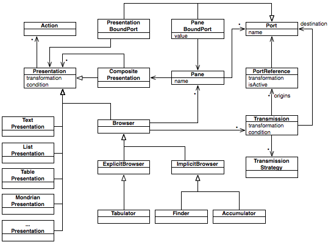
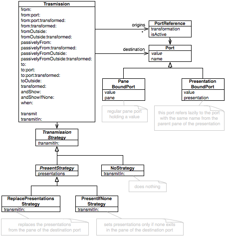
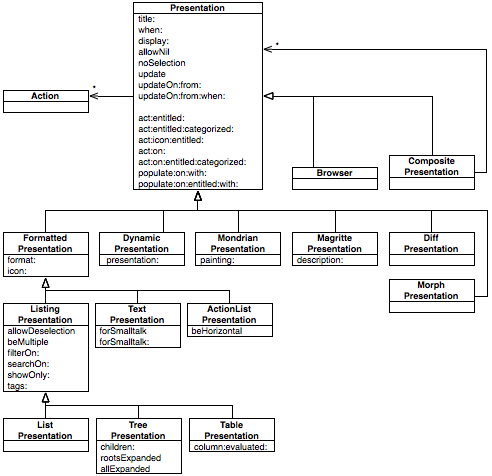
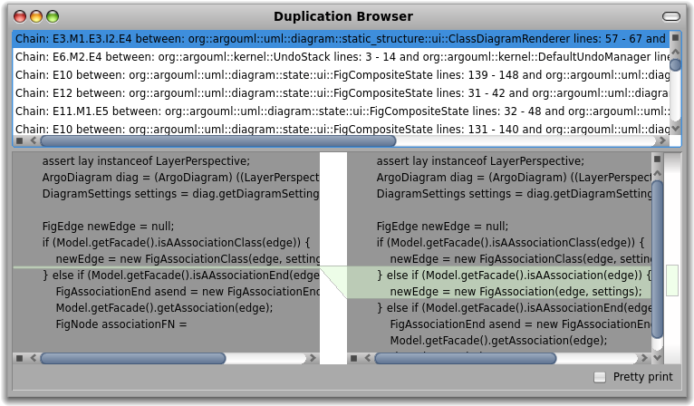
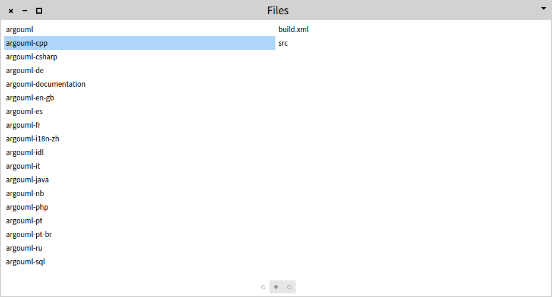

Moose in a nutshell
Moose (moosetechnology.org) is a platform for expressing analyses of software systems and of data in general. Its main goal is to assist and enable a human in the process of understanding large amounts of data. It addresses several categories of users:
- researchers in the area of software analysis, mining and reverse engineering,
- engineers and architects who want to understand systems and data, and
- tool builders.
This book covers Moose from various angles. It covers its externals, its internals, and the philosophy behind its design.
Moose in action
Let's start from a couple of examples around a case study. In our case, we take ArgoUML, an open-source Java project.
Analyzing Java code
The system contains some deprecated classes. A typical question is which of these classes we can remove. Essentially, this boils down to finding the classes annotated with @Deprecated and then selecting those that are not used anywhere (we ignore reflection for this exercise). This is an analysis.
We first need to build a model of our system, and for this we will use jdt2famix:
- Download and unzip version 1.0.2.
- Create an
ArgoUML-0-34folder. - Download the ArgoUML version 0.34 sources and place them in
ArgoUML-0-34/srcfolder (the name of the src folder can be arbitrary) - Download the ArgoUML version 0.34 libraries and place them in
ArgoUML-0-34/libsfolder (the name of the libs folder can be arbitrary) - Go to the
ArgoUML-0-34folder - From the command line execute
path/to/jdt2famix/sh
The result is that you will get an ArgoUML-0-34/ArgoUML-0-34.mse file with the serialized model that can be loaded in Moose. Make sure you have Moose 6.0 or later.
Starting Moose you see the following window:
Click on the MSE button on the top right and load the ArgoUML-0-34.mse file.
An extra step is to point the model to the sources folder. To this end, right click on the ArgoUML-0-34 model, choose Utilities/Set root folder and point to the ArgoUML-0-34 folder.
Now we are ready to query our system. Select All model classes.

By default you see the list of classes. At this point we are only interested in the deprecated classes, so let's select only those. Choose the playground tab (the one that looks like [|]) and type:
self select: [ :each | each isAnnotatedWith: 'Deprecated' ]
Select the whole text and from the contextual menu choose Do it and go (Cmd+g). This results in a new pane that spawns to the right containing 25 classes.

Just to make sure that we indeed got deprecated classes, let's investigate one of them and select to view the source code.

Let's step back for a moment. We see 2 panes at the moment, but we have 4 panes in total in our browser. Each pane represents one object and offers multiple views on this object. Furthermore, each pane is also represented by a dot in the scroll bar from the bottom. Hovering over a dot spawns a preview of the pane. If we want to see more or less panes we can do so by dragging the margins of the bar.
But, let's go back to our original problem. We now have the 25 classes that are deprecated in our system. Next, we need to check which of those are not used. Or if we think in terms of clients and providers, which of the deprecated classes do not have client classes. Open the playground corresponding to the pane with having 25 classes and execute the following expression:
self select: [ :each | each clientTypes isEmpty]We get 14 classes that can be removed immediately.

This leaves us with 11 classes that cannot be removed because they are still being used. So, what should we do about these?

It would be great to know how these classes are being used. Perhaps there is one deprecated class that is used in several places. Or maybe there is one non-depreated class that uses multiple deprecated ones. Or it can also be that multiple deprecated classes call each other. A plain list presentation is not quite ideal to exhibit these patterns. So, let's build a visualization instead.
In the pane of the 11 classes execute in the playground:
| view |
view := RTMondrian new.
view nodes: (self, (self flatCollect: #clientTypes)) asSet.
view layout grid.
viewThis shows us a simple visualization containing the 11 deprecated classes and their client types.

What we get is an interactive picture, and clicking on a node reveals the details of the actual class to the right.

Let's now distinguish between the deprecated and the non-deprecated classes:
| view |
view := RTMondrian new.
view shape circle
if: [ :each | each isAnnotatedWith: 'Deprecated' ]
color: Color red.
view nodes: (self, (self flatCollect: #clientTypes)) asSet.
view layout grid.
view

Ok, now we see the classes, but what is are the dependencies?
| view |
view := RTMondrian new.
view shape circle
if: [ :each | each isAnnotatedWith: 'Deprecated' ]
color: Color red.
view nodes: (self, (self flatCollect: #clientTypes)) asSet.
view edges connectFromAll: #clientTypes.
view layout grid.
view view pushBackEdges.
view
Now, let's arrange the graph a bit better.
| view |
view := RTMondrian new.
view shape circle
if: [ :each | each isAnnotatedWith: 'Deprecated' ]
color: Color red.
view nodes: (self, (self flatCollect: #clientTypes)) asSet.
view edges connectFromAll: #clientTypes.
view layout force.
view view pushBackEdges.
view

Ok. Now, we can distinguish several distinct situations. Two deprecated classes call each other and they can be simply removed. There is one non-deprecated class using two deprecated classes. And there are 3 deprecated classes that are being used by several other non-deprecated ones. This picture offers us the opportunity to choose our path by taking more details into account at the same time. For example, an interesting candidate to investigate is the one class that uses two deprecated ones.
Navigating XML files
Working with code is interesting but often the plain code does not provide the complete story. For example, ArgoUML happens to rely on some Ant XML files for building the system. Let's look at them. To this end, click on the background of Pharo and from the so called World menu choose Playground. If you are new to Pharo, the Playground is a little tool that allows you to evaluate scripts. We start with inspecting the object representing the root directory of our ArgoUML-0-34 model.
MooseModel root allModels anyOne rootFolder asFileReference

We want to find the Ant XML files. We could write a query, but let's first get a sense of what kind of files exist in the project. For this, we choose the Grouped files presentation of the src folder.

We see that we get 614 XML files. We pick the first build.xml.

The inspector shows the XML with syntax highlighting. Let's say that we want to understand the <property> elements from this file. One possibility would be to scroll through the file, but that would mean that we treat XML as text. Another way is to take advantage of the structure of XML. We switch to the Raw view and we parse the file.
XMLDOMParser parse: self contents

The tree is more appropriate for navigation, but still we are required to scroll. Instead, we should only care about the <property> tags. To this end, we can use an XPath query.
self // #property
The result is only a list of 44 <property> tags. Now we can read.
Beyond structured text
The previous examples show how the same interaction metaphor that we can use for navigating models of code, can be used to navigate and reason about arbitrary objects, such as objects representing files and folders. But, what happens when we do not have easy access to those objects?
Let's consider another example. The source of this chapter uses Pillar, a markup language. As with any technical documentation, it contains code, and very often we just want to scheme through that code. Of course, we could just scroll through the whole document, but that is not really cool. So, let's set to extract only the snippets.
First, we need the source. Open another Playground by clicking on the background of the window and inspect:
ZnClient new
url: 'https://raw.githubusercontent.com/girba/themoosebook/master/book/Chapters/Nutshell/index.pillar';
get

Looking at the first code snippet, we notice that it is introduced through a pattern like [[[ ... ]]]. To extract this pattern, we need a parser. Suppose we do not have a parser at hand. It follows that we should build one. But, given that we are not interested at this time in the whole grammar of the markup language, we should be able to extract only the snippet we care about. Switch to the Raw presentation and evaluate:
p := (('[[[' asParser , ']]]' asParser negate plus flatten , ']]]' asParser
==> #second) sea
==> #second) star.
p parse: self contents.Evaluating this code, extracts the wanted snippets. Now we can read.

Moose overview
The examples above exercised several Moose components. Let's take a step back and observe the overall structure of Moose.
Moose is a generic platform for engineers that want to understand data in general, and software systems in particular. Foremost, Moose is designed for programmers, not for clickers. To get the most out of it, you have to program it. First, that means that you have to program in Pharo. Second, you have to learn the inner workings of Moose to understand how to use it.
This is actually less difficult than it sounds. Pharo is a beautiful language, and if you do not know it already, you will not be sorry for learning it. And Moose is rather small having less than 2000 classes and less than 150k lines of code. Let's take a quick tour.
From a conceptual point of view, Moose is organized as follows.

The picture emphasizes two aspects:
- The analysis process is iterative. Once data imported, the input to the actual analysis is a model. Applying an analysis yields another model that can be further analyzed. This is somewhat similar to a pipes-and-filters design, only it involves more feedback and interaction possibilities.
- The analysis process is customizable. The job of dedicated engines is to help the engineer craft new importers, models and analyses.
This might sound like mumbo jumbo, but let us take a moment and consider how this diagram is instantiated through a couple of examples.
The input is always some piece of data. By data, we understand all sorts of structures that contain objects, properties and relations. For example, data can be a software system written in Java. Or it can be a set of configuration files written in XML. Or it can be some meta-data about your system. Or it can be a text file.
This data is loaded in Moose via importers. You can import data from various sources and in various formats. For example, you can import the structure of software systems either through internal importers (e.g., for Smalltalk code, XML, JSON, MSE), or through external ones (e.g., Java).
The importing of data can be perceived as a rather unexciting step, but it is a necessary one. Once imported, the data is stored into models. This is where things get more interesting because on top of these models you can start performing various kinds of analyses.
What do we mean by analyses? Metrics, queries, interactive visualizations etc. There a multitude of basic services like these provided by default. These tools can be applied interactively, and can be combined to produce more complex analyses such as: computation of dependency cycles, detection of high level design problems, identification of exceptional entities and so on. A key concept is that the results obtained after applying a specific analysis are fed back into the model and are available for further analysis. This enables an iterative process through which the analysis is built and refined gradually.
But, Moose is more than a tool. Moose is a platform. This is not just marketing, and it actually means that it is designed to help you build your own tools. This is achieved by means of several engines through which you can control and customize the complete analysis workflow. In particular, you can:
- build new importers for new data sets,
- define new models to store the data, and
- create new analysis algorithms and tools such as: complex graph visualizations, charts, new queries, or even complete browsers and reporting tools altogether.
Let's now take a closer look at some of these engines.
PetitParser
PetitParser is a parsing engine. Its goal is to help engineers craft parsers for various programming languages and data formats.

For example, to build a parser for SQLite, you can follow the official abstract grammar (see http://www.sqlite.org/syntaxdiagrams.html). In this grammar, the selectCore is one of the central productions and the specification looks like:

Using PetitParser, this becomes:
select ,
(distinct / all) optional ,
(resultColumn separatedBy: $, asParser trim) ,
(from , joinSource) optional ,
(where , expression ) optional ,
(groupBy ,
(orderingTerm separatedBy: $, asParser trim),
('HAVING' asParser caseInsensitive trim , expression) optional
) optionalDue to PetitParser's expressivity, the implementation is essentially as compact as the original abstract definition. This characteristic makes mapping abstract notations to actual implementation simple. But, PetitParser goes a step further than usual similar engines, and it also provides custom development tools. For example, it comes with a browser that lets the engineer navigate the structure of a parser, and debug the execution of a parser against a textual input.
In the picture below, you can see the definition of the selectCore production from the SQLite grammar. In the lower part, the programmer can enter a sample and debug the result. The debugger is interactive and shows which production matched which part of the input string (in our example, joinSource matches TABLE).

Furthermore, the browser offers other visual representations of the grammar. For example, in the picture below, the browser shows a graphical decomposition of the selectCore production. The picture is essentially the same as the picture shown in the abstract grammar.
Developing an analysis is a software development project, and it is subject to the same problems any software development project has. Given that Moose's aim is precisely to decrease the cost of analysis, having a dedicated environment covering the complete cycle of developing a parser is a key ingredient for decreasing the cost of building non-toy parsers.
Fame, FAMIX, MSE
Fame is one of the two engines that provide the meta-modeling infrastructure of Moose. The other one is Magritte and it is mostly used for user interface purposes. Fame provides several things:
- a meta-engine,
- a compact serialization format (MSE) in which both models and meta-models can be serialized,
- code generation possibilities, and
- a Java implementation that is fully compatible with the Moose one. In particular, the latter allows us to easily populate a model from Java, export it to an MSE file, and then load it into Moose.

Fame is essentially used for all meta-models used in Moose, the most prominent being FAMIX - a language independent meta-model for modeling software programs. For example, FAMIX models entities like Method, Attribute, or Access.
Fame attaches meta-descriptions to implementation via pragmas. For example, BehaviouralEntity is annotated on the class side like:
FAMIXBehavioralEntity class>>annotation
<MSEClass: #BehaviouralEntity super: #FAMIXContainerEntity>
<package: #FAMIX>
^selfProperties are annotated in a similar fashion. For example, the property pointing to all Access entities that originate in a BehavioralEntity is annotated in the getter method:
FAMIXBehavioralEntity>>accesses
<MSEProperty: #accesses type: #FAMIXAccess opposite: #accessor>
<multivalued> <derived>
<MSEComment: 'Accesses to variables made by this behaviour.’>
^ accessesBased on these annotations Fame constructs a meta-model that lives in parallel to the actual implementation and that offers extra information useful for scenarios like browsing or import-export.
An engine is not complete without at least a dedicated tool that helps you manage it. In particular, because with Fame you can define various meta-models implemented in the image via pragmas attached to the implementation classes, we need to keep track of what is available.
To this end, the Moose Meta Browser provides an easy way to keep an overview of the various meta-models available at any given time in the Moose image. The picture below shows the details of the BehaviouralEntity from FAMIX.
But, FAMIX is more than just a simple meta-model for software systems. It is also a rich API for querying those models.
Let’s look at an example. Suppose you want to look for all classes that are not being directly called by JUnit test.
model allModelClasses select: [:each |
each clientTypes noneSatisfy: #isJUnit4TestCase ]Having a highly expressive API brings makes querying inexpensive. And when you combine this ability with visual and interactive tools, you get a different way of experiencing your systems.
Roassal
Roassal is an engine for crafting interactive graph visualizations. For example, the visualization from the picture above is built using Roassal.

At its core, Roassal offers a fine grained object-oriented model for displaying, interacting and animating graphs. On top of this model, Roassal offers several convenient builders for mapping arbitrary objects onto a drawable graph, the most known being the Mondrian builder.
To make visualization crafting easier, Moose offers tools to develop such visualizations. For example, the inspector allows us to embed and preview visualizations directly. The picture below shows an example of a visualization script executed against a directory showing the nesting of all subdirectories in a circular treemap and highlighting the directories that contain a build.xml file.
b := RTCircularTreeMapBuilder new.
b shape
borderColor: Color lightGray;
if: [ :d |
d files anySatisfy: [ :f |
f basename = 'build.xml' ] ] color: [ Color red ].
b leafWeight: [:f | f size sqrt ];
explore: self
nesting: #directories
leaves: #directories.
b

The script is rather compact. Furthermore, you do not even have to write the complete script at once. Instead, you can preview the state of the visualization after each modification. Thus, you can iterate easily until you reach an acceptable result.
These visualizations are fully interactive, and developers can continue inspecting the objects behind the visual representations. This is particularly relevant for supporting iterative analyses.
You can learn more about Roassal in the Agile Visualization book.
Glamour
Visualizations are great, but analyzing complicated models requires browsing through multiple complementary views. To help you craft browsers fast and inexpensively, Moose comes with the Glamour browsing engine.

The entire user interface of Moose is built with Glamour (yes, the pun is intended). For example, take a look at the code browser below. It shows a standard browser opened on a Java system.

The size of the code associated with this browser measures about 130 lines. This tiny compared with the functionality. For example, inside the same browser, you can scope the methods by the instance variables that they use, and you can navigate through the senders and implementors of a method. This is possible because Glamour is based on a novel model for capturing the essence of browsing at a higher level than that of user interface widgets.
The goal of Glamour is to let you build the workflow of a browser, while the more fancy rendering is delegated to other engines like Roassal. Glamour also comes with a dedicated editor that enables developers to test and preview their browsers.
For example, the picture below shows a browser that lets you query or select classes from a list, and preview their interaction as a System Attraction visualization. The browser is generated with the script at the bottom and previewed on top.
composer tabulator with: [ :t |
t column: #list; column: #map.
t transmit to: #list; andShow: [ :a |
a list
beMultiple;
showOnly: 100;
format: #mooseDisplayString;
withSmalltalkSearch ].
t transmit from: #list; to: #map; andShow: [:a :selected |
a roassal2
initializeView: [ RTMondrian new ];
painting: [:view |
FAMIXSystemAttraction new view: selected on: view ] ] ].
composer startOn: classGroup.

Perhaps interesting to note is that the editor itself was built with Glamour, too. Or the Finder interface that you can see below was also written in Glamour in a couple of hundreds of lines of code.
Browsers are important tools for understanding complicated models. Glamour makes the construction of such browsers inexpensive. You can learn more about Glamour in the dedicated chapter from the Moose Book.
Finder
All these engines can be combined in various forms. One interface in which most of them come together is the Moose Finder, the basic browser meant to help you navigate through models.
The browser is based on Glamour. To cope with any model, it generates dynamically the navigation paths based on Fame descriptions (for example, when selecting a class you can navigate to its methods). It also includes multiple Roassal-based visualizations that are specific to each entity type. Also, for color displaying source code with syntax highlighting, it uses a PetitParser-based parser.
For example, the screenshot below shows the finder open on a group of classes from a Java system. The pane to the right shows the result of the query entered at the bottom (each annotationTypes notEmpty retrieves all classes that have at least one class-level annotation). Furthermore, the preview is shown highlighted on a System Nesting Map.
Selecting one of the classes from the map, spawns another pane to the right. In our case, the browser shows the source code of the selected class with syntax highlighting.

The Moose Finder focuses on the iterative nature of analysis. Every instance of the browser captures one analysis flow where every pane represents a step in the analysis. This is particularly useful when the analysis requires multiple steps. Furthermore, the Finder is extensible, and developers can easily add presentations specific to their entities.
The Glamorous Toolkit
Moose is primarily an analysis platform. This means that the editing part is not particularly supported for external languages. However, the lessons from Moose should be more closely embedded inside the IDE (integrated development environment). For Pharo, this happens through the Glamorous Toolkit (gtoolkit.org). The core concept of the toolkit is the idea of moldability, a property that allows engineers to adapt development tools inexpensively to deal with contextual problems. We have already seen in the examples above how the Playground and the Inspector can help us work with arbitrary objects. Similarly, we can also use Spotter, the search interface. In the figure below we can see a search through the entities of a Java code model.

Other engines and tools
The engines and tools mentioned above are the most visible one that come with Moose. Yet, Moose offers more. To name a few:
- Arki for building reports;
- MooseAlgos for expressing various algorithms related to data mining, graphs or traversals;
- SmaCC parsing framework;
- XML, JSON, CSV support;
- Metanool for handling custom annotations on entities;
- Multiple off-the-shelf dedicated browsers, software metrics and visualizations.
Summary
Moose is a platform that is made for programmers. It provides engines to express those analyses, and a rich development environment to actually craft them.
Working with Moose does imply a learning curve. However, this investment is worthwhile from two perspectives:
- Moose aims to be versatile enough so that you can address multiple scenarios with it. Its most obvious target is the analysis of source code models. However, the same tools can be used to reason about any objects, too.
- Moose makes humane assessment possible by bringing the cost of crafting custom tools close to zero. When tools cost almost nothing, the activity of humans can change dramatically.
But, Moose is more than the source code. It is also an active and open community. If you want to give it a try, just join us. Work with us. Play with us. Software engineering is still young and there are plenty of things to uncover.
If someone asks, you can say that Moose is all about custom analyses made easy.
Importing and exporting models
The first step in the process of analysis is the generation of a model of a given target system or set of data. Moose can handle multiple types of data and data sources. This chapter provides a short guide for how to deal with these.
Importing and exporting with MSE
The preferred way to load a model in Moose is via an MSE file. To load an MSE file, all you have to do is to press the ``Import from MSE'' button in the Moose Panel and indicate the file to load. This creates a model, populates it with the entities from the file and adds the model to the repository. Visually, the model appears in the list of models from the Moose Panel.
But what exactly is MSE? MSE is the default file format supported by Moose. It is a generic file format and can describe any model. It is similar to XML, the main difference being that instead of using verbose tags, it makes use of parentheses to denote the beginning and ending of an element.
The following snippet provides an example of a small model:
( (FAMIX.Namespace (id: 1)
(name 'aNamespace'))
(FAMIX.Package (id: 201)
(name 'aPackage'))
(FAMIX.Package (id: 202)
(name 'anotherPackage')
(parentPackage (ref: 201)))
(FAMIX.Class (id: 2)
(name 'ClassA')
(container (ref: 1))
(parentPackage (ref: 201)))
(FAMIX.Method
(name 'methodA1')
(signature 'methodA1()')
(parentType (ref: 2))
(LOC 2))
(FAMIX.Attribute
(name 'attributeA1')
(parentType (ref: 2)))
(FAMIX.Class (id: 3)
(name 'ClassB')
(container (ref: 1))
(parentPackage (ref: 202)))
(FAMIX.Inheritance
(subclass (ref: 3))
(superclass (ref: 2))))
The file defines 8 entities: 1 Namespace, 2 Packages, 2 Classes, 1 Method, 1 Attribute and 1 Inheritance. For each of these entities it provides a unique identifier (e.g., (id: 1)) and it defines properties. In general, properties can be either primitive, like (name 'aNamespace'), or they can point to another entity, like in the case of (container (ref: 1)) which denotes that the container property of ClassA points to the instance of Namespace named aNamespace.
The overall object graph can be seen graphically below.

A more complex MSE example is available for download as described in .
Once a model is loaded, it can be easily exported as an MSE file. This can be done via the contextual menu of the model. By choosing the ``Export to MSE'' menu item you will be prompted to indicate the desired file name and location, and the result is an MSE file saved on the disk containing the entities in the model.
Importing Pharo code
Moose comes with a built-in importer for Pharo code. The prerequisite for using this importer is that you first need the target source code present in the Pharo image.
Once the code is present, simply press on the ``Load from Pharo'' item from the menu of the Moose Panel, and follow the steps from the opening wizard.
This importer works out of the box for code built for Pharo. For code written in other Smalltalk dialects, the code must first be made loadable into Pharo. Moose does not offer ready made solutions for these other languages, but for most known dialects, like VisualWorks, you can often find solutions for exporting the code in a file format loadable in Pharo. An important note is that the code does not have to be fully functioning. It merely needs to be loadable in the Pharo image.
Importing Java code
Moose supports the analysis of Java systems by means of external parsers and MSE file for model interchange. The general process can be seen in the picture below.
The first step is to use the external parser to process the Java sources. Afterwards, the external tool exports the model in MSE. And finally, this MSE file is imported in Moose.

jdt2famix is an exporter that produces MSE files out of Java code. It is based on JDT Core and Fame for Java, and it requires Java 8. More information, including instructions of how to use it can be found on the main page: https://github.com/girba/jdt2famix.
example
Setting the root folder
To be able to access the source text of a model imported from MSE, we first need to locate this source text. However, models do not typically contain source text representation. Instead the source is stored in external files, and Moose needs to learn the location of these files so that it can display and manipulate the source.
For example, after importing a Java system with inFusion, we get just the MSE file and we need to reconcile it with the actual sources. You can achieve this for any model by invoking from its contextual menu: Utilities/Set root folder.
Another way to achieve the reconciliation between the MSE file and the sources is to place the sources in the default root folder for the model which is a folder with the same name as the model placed under a src folder inside the folder containing the moose.image file. For example, for the ArgoUML running example, you should place the contents of the ArgoUML folder under the following folder:
/
moose.image
moose.changes
src/
ArgoUML-0-34/Writing parsers with PetitParser
Pre-existing parsers and importers allow us to deal with well-known languages and data formats. However, in many situations we have to reason about systems written in custom languages or formats.
In such situations we need to have the possibility of specifying custom parsers. Moose comes with PetitParser, a parsing framework that enables us to build custom parsers easily.
This chapter covers this framework. We start with a hands-on tutorial (see ), and then we move on to looking into the overall design and the various components.
Step by step parsing of MSE
To show how PetitParser works, we take as case study creating a parser to manipulate MSE files. That is right: we pretend Moose has no infrastructure for handling MSE files and we have to create one from scratch.
The only input we consider is the official grammar of MSE given using the following rules:
Root := Document ?
Document := OPEN ElementNode * CLOSE
ElementNode := OPEN ELEMENTNAME Serial ? AttributeNode * CLOSE
Serial := OPEN ID NATURAL CLOSE
AttributeNode := OPEN SIMPLENAME ValueNode * CLOSE
ValueNode := Primitive | Reference | ElementNode
Primitive := STRING | NUMBER | Boolean
Boolean := TRUE | FALSE
Reference := IntegerReference | NameReference
IntegerReference := OPEN REF NATURAL CLOSE
NameReference := OPEN REF ELEMENTNAME CLOSEOPEN := "("
CLOSE := ")"
ID := "id:"
REF := "ref:"
TRUE := "true"
FALSE := "false"
ELEMENTNAME := letter ( letter | digit ) * ( "." letter ( letter | digit ) * )
SIMPLENAME := letter ( letter | digit ) *
NATURAL := digit +
NUMBER := "-" ? digit + ( "." digit + ) ? ( ( "e" | "E" ) ( "-" | "+" ) ? digit + ) ?
STRING := ( "'" [^'] * "'" ) +digit := \[0-9]
letter := \[a-zA-Z_]
comment := """ [^"] * """Based on this, we first want to define a grammar to be able to read the file (see , , and ). Once able to read, we learn how to test the grammar (see ), and how to build a parser that produces a better output (see ).
Further examples can be found at:
Starting small with parsing names
As a first task, we parse the identifier names. Looking closely at the MSE grammar, we can find two distinct definitions for identifier names:
ELEMENTNAME := letter ( letter | digit ) * ( "." letter ( letter | digit ) * )
SIMPLENAME := letter ( letter | digit ) *
Let's start with SIMPLENAME. The grammar definition says that a valid name must start with a letter, and afterwards it can be followed by either a letter or a digit repeated multiple times. The same specification can be represented graphically:
The translation to PetitParser looks like:
simpleName := #letter asParser , ( #letter asParser / #digit asParser ) star.
It is that easy. It reads almost like the abstract grammar. In essence, the grammar production is mapped on a parser object, and in this case we store it in the simpleName variable. The parser object is obtained out of terminal parser objects such as #letter asParser for parsing one letter character, or #digit asParser for parsing one digit character. These terminal parsers are composed using operators like , (sequence), / (choice) or star (zero or many). The result is a composite parser whose structure is a graph of objects.

To test our parser we pass it an input string via the parse: method:
simpleName parse: 'ValidName'. "--> #($V #($a $l $i $d $N $a $m $e))"If we print the result we obtain a rather strange looking array that contains each individual character of the input string. We deal with the manipulation of the result at a later time. Currently, we declared ourselves satisfied with getting a valid result.
How do we recognize a valid response from an invalid one? Let's give it a try by passing an invalid name:
simpleName parse: '1InvalidName'. "--> letter expected at 0"
If we inspect the result, we obtain an instance of PPFailure, which denotes that the parser was not successful in parsing the input. If we only want to test the success of parsing, then we can also use the match: method:
simpleName match: 'ValidName'. "--> true"
simpleName match: '1InvalidName'. "--> false"
Having simple name sorted out, we can tackle ELEMENTNAME. It looks slightly more complex and it requires us to specify an optional part that can follow after a dot character. We approach it like we did before and by translating the abstract grammar notation into the PetitParser API.
elementName := #letter asParser , ( #letter asParser / #digit asParser ) star ,
(
$. asParser ,
#letter asParser , ( #letter asParser / #digit asParser ) star
) optional.
The optional part is specified by simply sending optional to the corresponding parser. Furthermore, to parse the dot character we use $. asParser.
At a closer look, we notice the duplication in the above definition. The first part that covers the input until the optional dot is repeated inside the optional part. We could factor it out. Actually, we already have it in simpleName, and we can reuse it:
elementName := simpleName , ($. asParser , simpleName) optional.We can test it:
elementName matches: 'Valid.Name'. "--> true"
elementName matches: '1InvalidName.' "--> false"Manipulating the output of parsing strings and numbers
Let us now tackle the parsing of MSE srings and numbers. Valid strings start and end with a single quote character, and in between we should have any non single-quote character:
STRING := ( "'" [^'] * "'" ) +
The tricky part is expressing any character except. This is achieved through negate. We specify our parser through a sequence in which the contents of the string are given by the parser of single-quote negated and repeated multiple times:
string := $' asParser ,
$' asParser negate star ,
$' asParser.A more challenging task would be to add support for escape characters. For example, in MSE, it is allowed to have the character single-quote if it is escaped by another single-quote. The parser could be written as:
string := $' asParser ,
('''''' asParser / $' asParser negate) star ,
$' asParser.The parser now says that either we have two single-quotes one after the other or we do not have any single-quote.
Why are there six single-quotes? This happens because the code is written in Smalltalk, and in Smalltalk strings are also marked with single-quotes. For this reason we have two single-quotes surrounding the Smalltalk string, and inside we need to escape the two single-quotes with two more as required by Smalltalk. In total, we get six.
We can test the code:
string parse: '''string'''. "--> #($' #($s $t $r $i $n $g) $')"
string parse: '''qu''''ote'''. "--> #($' #($q $u '''''' $o $t $e) $')"
The grammar works fine, but the result we obtain is less useful. PetitParser has two major responsibilities: to consume the input according to a grammar, and to transform it into a desired output. Given that the consuming boils down to a traversal of an input stream, the default result is nothing but a nested collection, where the nesting mirrors the specified grammar. For example, #($' #($s $t $r $i $n $g) $') is a Smalltalk array with three elements:
$',($s $t $r $i $n $g)which is a nested array produced bystar, and$'.
Let us produce a more convenient output in the form of a regular Smalltalk string. First, we want the second element in the resulting array to not be an array but directly a flatten string. For this we have a convenient flatten operator.
string := $' asParser ,
('''''' asParser / $' asParser negate) star flatten ,
$' asParser.The new result looks better:
string parse: '''string'''. "--> #($' 'string' $')"
Ultimately, we would want our little parser to ignore the first and the last element and return only the second one. For this, PetitParser offers the possibility to specify a custom transformation through the ==> operator:
string := ($' asParser ,
('''''' asParser / $' asParser negate) star flatten ,
$' asParser)
==> [ :token | token second ].The transformation operator can be applied to any parser and it takes a block with one argument. The value of the argument is given by the default result of the current parser.
In our case, the token argument holds the array #($' 'string' $') and we simply say we want to return the second element. The result is finally what we want:
string parse: '''string'''. "--> 'string'"Now, let us move on and create a parser for numbers that produces Smalltalk numbers. For the simplicity of the discussion, let us focus on a smaller grammar:
NATURAL := digit +
NUMBER := "-" ? digit + ( "." digit + ) ?The correspondent parser can look like:
natural := #digit asParser plus.
number := ($- asParser optional , natural , ($. asParser , natural) optional).While the above parser is a direct translation of the grammar definition, we can decompose it better to make the several parts more explicit:
natural := #digit asParser plus.
decimalPart := ($. asParser , natural).
positiveNumber := natural , decimalPart optional.
negativeNumber := $- asParser , positiveNumber.
number := positiveNumber / negativeNumber.In the end, we want to produce a number. To achieve this we use the transformation blocks for each parser.
natural := #digit asParser plus flatten
==> [:token | token asNumber].
decimalPart := ($. asParser , natural)
==> [:token | (token at: 2) * (10 raisedTo: (0- (token at: 2) asString size)) asFloat ].
positiveNumber := natural , decimalPart optional
==> [:token | (token at: 1) + ((token at: 2) ifNil: [0]) ].
negativeNumber := $- asParser , positiveNumber
==> [:token | 0 - (token at: 2)] .
number := positiveNumber / negativeNumber.
We start with the natural parser and simply use the asNumber method available in a Smalltalk string that transforms the contents of the string into a number. From this point on, when the natural parser is used, the output will always be a Smalltalk number, and not a string anymore. Using this approach we can build up the result out of fine grained pieces.
One thing to notice is what happens with an optional part. For example, the positiveNumber has an optional decimalPart. This means that if the decimal part is available, the second element in the token array will hold the value of applying the decimalNumber parser to the input, but if the decimal part is missing, the corresponding value will be nil. Thus, we typically have to guard the manipulation of an optional part with an if in the transformation block. In our case, we want 0 when no decimal part is specified.
One way to go around the use of an optional is to use the choice parser combinator (i.e., /). For example, even if in the original grammar there are two optional productions (i.e., one for the sign, and one for the decimal part) in the transformation blocks we have only one if. This happens because we modeled the optional sign in a number with a choice between a positiveNumber and a negativeNumber. While both approaches can have their benefits, it is important to know of their existence and choose the one that better fits the problem at hand.
Dealing with cyclic dependencies when scripting the MSE grammar
In we see in details how we approach the definition of parsers to deal with the names. Once the grammar is clear, the process is straightforward and can be repeated for any production rules.
The full MSE parser can be seen below.
open := $( asParser trim.
close := $) asParser trim.
string := ($' asParser ,
('''''' asParser / $' asParser negate) star flatten ,
$' asParser) trim.
natural := #digit asParser plus flatten.
e := ($e asParser / $E asParser) , ($- asParser / $+ asParser) optional , natural.
number := ($- asParser optional , natural ,
($. asParser , natural , e optional) optional) flatten trim.
boolean := ('true' asParser / 'false' asParser) flatten trim.
primitive := string / number / boolean.
simpleName := #word asParser star flatten.
elementName := (simpleName , ($. asParser , simpleName) optional) token trim.
nameReference := (open , 'ref:' asParser , elementName , close) token.
integerReference := (open , 'ref:' asParser , natural trim , close) token.
reference := integerReference / nameReference.
element := PPUnresolvedParser new.
attributeValue := (primitive / reference / element) star.
attribute := (open , simpleName , attributeValue , close) trim.
id := (open , 'id:' asParser , natural trim , close) trim.
element def: ( (open , elementName , id optional , attribute star , close) trim).
elements := open , element star , close.
start := elements end.You can test the parser with a valid MSE string:
mseString := '(
(FAMIX.Package
(name ''PackageP''))
(FAMIX.Class
(name ''ClassA''))
(FAMIX.Method
(name ''methodM''))
)'.
start parse: mseStringA particularity of this example is the use of PPUnresolvedParser. When scripting a grammar, every production is held in a parser variable. However, in our case, we have cyclic definitions:
- the
elementparser depending on theattributeValueparser (throughattribute), and - the
attributeValueparser depending on theelementone.
This is the case where PPUnresolvedParser comes to the rescue. We first define one of the parser as undefined, refer to it from the second parser, and then we define the first rule using def:.
This example provides a good coverage of the various operators available in PetitParser. More detailed information about these can be found in .
Encapsulating the MSE grammar in a class
Scripting a parser is fast, but it can also get dirty. In fact, for any parser that has more than a handful of sub-parsers, it typically gets too dirty.
To solve the situation, PetitParser also offers the possibility of mapping a parser on a class. The idea is quite simple:
- the class must be a subclass of
PPCompositeParser, and it holds the complete parser, - the methods of the class provide the productions, and
- the attributes of the class store the actual sub-parsers.
Let us take our example of producing an MSE grammar. We first create the class.
PPCompositeParser subclass: #ExampleMSEGrammar
instanceVariableNames: ''
classVariableNames: ''
poolDictionaries: ''
category: 'MSEParserExample'Afterwards, we take each production from the script and we transform it in a method. For example:
start := elements end.gets transformed into:
start
^ elements endThis might look odd at first sight. Indeed, there is a little magic going on behind the scene. Let us take a closer look.
For every production, we create a method. In this case we create the start method, which happens to be mandatory for telling the parser from which production it should start by default.
The odd thing is that in the method we refer directly to the elements production via an instance variable (i.e., instead of calling a method). This happens because the PPCompositeParser uses reflection to lookup the corresponding method and to store the result in the instance variable. This leads to a better performance when the same production is used in two different places.
Given that we now refer to the elements instance variable, we also have to create the corresponding method. To do this, we simple copy the production from the script:
elements
^ open , element star , close.Repeating these steps for all the productions from the script, we obtain our grammar class. Afterwards, we can execute a parsing command via:
mseString := '(
(FAMIX.Package (id: 1)
(name ''PackageP''))
(FAMIX.Class (id: 2)
(name ''ClassA'')
(parentPackage (ref: 1)))
(FAMIX.Method (id: 3)
(name ''methodA'')
(declaredType (ref: 1))
(parentType (ref: 2)))
)'.
ExampleMSEGrammar parse: mseStringTesting the MSE grammar class
Parsers can get complex quite quickly. For example, the MSE grammar developed previously (see ) even if rather small, it is reasonably intricate as can be seen in the graph below:

In this situation testing becomes central for controlling the evolution of the parser. Given its importance, PetitParser offers a dedicated infrastructure similar to the one for creating parsers.
To create a test case, we first create a subclass of PPCompositeParserTest:
PPCompositeParserTest subclass: #ExampleMSEGrammarTest
instanceVariableNames: ''
classVariableNames: ''
poolDictionaries: ''
category: 'MSEParserExample'
In this test class, we override the parserClass method to return the target parser to be tested:
ExampleMSEGrammarTest>>parserClass
^ ExampleMSEGrammar
Afterwards, each test method should be focused on testing one example for one production. For writing the assertion, the base test class offers a utility parse:rule: that checks that the string passed as the first argument is parse-able using the production passed as the second argument. For example, for testing the element name we can write:
ExampleMSEGrammarTest>>testElementName
self parse: 'ABC.XYZ' rule: #elementNameCreating an MSE parser
The grammar provides a means to digest the input from a syntactic point of view. The default result of parsing the input using this grammar is an array. In most cases this array is not at all satisfactory. Instead, we need to produce an output that matches our problem.
Let us consider using the MSE grammar from for a simple input.
mseString := '((FAMIX.Package))'.
ExampleMSEGrammar parse: mseString.
"--> an Array($( an Array(an Array($( a PPToken(FAMIX.Package) nil #() $))) $))"
Let us supposed that we merely want to produce a regular Smalltalk nested array out of input. There is a lot of unwanted cruft that we would like to get rid of, such as not printing a PPToken explicitly, but only get the name of the element.
To solve this problem, we subclass the grammar class with a parser class that will take care of the desired transformation.
ExampleMSEGrammar subclass: #ExampleMSEArrayParser
instanceVariableNames: ''
classVariableNames: ''
poolDictionaries: ''
category: 'MSEParserExample'Before we go any further, we write a test. To do this we mirror the hierarchy of parsers with a hierarchy of tests:
ExampleMSEGrammarTest subclass: #ExampleMSEArrayParserTest
instanceVariableNames: ''
classVariableNames: ''
poolDictionaries: ''
category: 'MSEParserExample'ExampleMSEArrayParserTest>>testElementName
super testElementName.
self assert: result = 'ABC.XYZ'
The first line, simply calls the test defined in the super class (see ). Because the test stores the parsing result result in the result instance variable, we can use this instance variable for writing the assertion.
The test fails as expected. To make it work, we now have to override the elementName definition in the parser class and specify how the output should be transformed:
ExampleMSEArrayParser>>elementName
^ super elementName
==> [:token | token value ]
The output transformation is achieved through the ==> operator. This operator takes as input the value returned by the parser and returns the result of evaluating the block. In this case, we simply want to extract the string value out of the token object.
With this change, the test becomes green, and running the example yields:
mseString := '((FAMIX.Package))'.
ExampleMSEArrayParser parse: mseString.
"--> an Array($( an Array(an Array($(FAMIX.Package nil #() $))) $))"Parsing operators
PetitParser is based on scannerless parsing. This means that even the most basic of parsers are parsers too. PetitParser offers several of these basic parsers, also called terminals. Here are some examples:
| Terminals | Description |
|---|---|
$a asParser |
Parses the character $a. |
'abc' asParser |
Parses the string 'abc'. |
#any asParser |
Parses any character. |
#digit asParser |
Parses the digits 0..9. |
#letter asParser |
Parses the letters a..z and A..Z. |
#cr asParser |
Parses the carriage-return character. |
#lf asParser |
Parses the line-feed character. |
#space asParser |
Parses the space character. |
#tab asParser |
Parses the tabulator character. |
nil asParser |
The empty parser. |
More readily available terminals can be found on the class side of the PPPredicateObjectParser class, in the factory-chars protocol.
| Combinators | Description |
|---|---|
p1 , p2 |
Parses p1 followed by p2 (sequence). |
p1 / p2 |
Parses p1, if that doesn’t work parses p2 (ordered choice). |
p star |
Parses zero or more p. |
p plus |
Parses one or more p. |
p optional |
Parses p if possible. |
| Predicates | Description |
|---|---|
p and |
Parses p but does not consume its input. |
p not |
Parses p and succeeds when p fails, but does not consume its input. |
p negate |
Parses any input token but the receiver. |
p end |
Parses p and succeeds at the end of the input. |
To manipulate the output of a parser, PetitParser offers actions that we can use to decorate the parser.
| Actions | Description |
|---|---|
p ==> aBlock |
Performs the transformation given in aBlock. |
p flatten |
Creates a string from the result of p. |
p token |
Creates a token from the result of p. |
p trim |
Trims all whitespaces before and after p. |
p trimBlanks |
Trims the blanks before and after p. |
Dedicated user interface
If you want to visualize, edit, or debug the parser, you can use the built-in editor by:
PPBrowser open

Meta-modeling with Fame
Fame is the meta-modeling infrastructure of Moose. It provides the following features:
- the FM3 self described meta-meta-model,
- meta-description of regular implementation classes through annotations,
- the MSE format for model interchange,
- input/output serialization to the MSE format, and
- generation of implementation classes from a meta-description.
The FM3 meta-meta-model
The core of Fame is given by the FM3 meta-meta-model. FM3 is a small meta-meta-model inspired from the Essential Meta-Object Facility.
All meta-models from Moose are described in terms of FM3.
More information about it can be found at: http://www.moosetechnology.org/tools/fame/
Subject, model, meta-model, meta-meta-model
Often, the terms of model and meta-model generate confusion. As they are crucial for understanding the terminology related to modeling, let me spend a couple of words to clarify them.
Before talking about either of them, we first have to talk about the concept of a subject. A subject is simply something we want to reason about. It can be something from the real world, or something imaginary. For example, if we want to analyze a software system, that software system is the subject.
The act of reasoning is typically geared around one specific problem or question. The answer to the question typically only concerns a small subset of all the characteristics of the subject. Thus, the process of reasoning is greatly enhanced if we limit its scope to only the relevant variables.
For example, when we want to reason about the best path to get from point A to point B, we only require the route information, and we do not really need to know about other details like the quantity of oil in the ground, or the language spoken by the inhabitants. This is why for the purpose of route finding, we typically use a travel map which is a great tool that provides exactly the details we need to solve our little problem.
In general, to solve a problem we construct simplifications of the subject. We call these models. Bezivin and Gerbe define a model: a simplification of the subject, and its purpose is to answer some particular questions aimed towards the subject. In the case of Moose, FAMIX (see ) is a family of meta-models for representing the structure of software projects.
Given that a model captures only a part of the complete subject, we can build many models that represent the same subject but that capture different variables of the subject. To reason about a model we need to know which exact variables it offers. In other words, we need to know the structure of the model. This information is expressed in the meta-model, where a meta-model is a model that makes statements about what can be expressed in valid models.
One common misconception is to say that a meta-model is the model of a model. That is incorrect. A model shows a simplification of a subject. A meta-model offers the vocabulary for formulating reasonings on top of a given model. While both are models, they are different in intent and interpretation.
Another form of the above misconception is formulated as: the relationship between the model and subject is the same as the one between meta-model and model. That is incorrect as well. While a model represents a subject, a meta-model describes a model.
Once we understand the difference between meta-model and model, we can go even deeper in the meta-land and add as many meta levels as we might need. The attached diagram shows an overall of four levels and their relationships.
Why would we need more meta-levels? We always need a meta-level when we want to reason about the model at the level below. When we want to reason about a map, we need to know its structure. In the same way, when we want to reason about the structure of a map, we need to know the structure of the structure of the map. In Moose, we have a main meta-meta-model in terms of which we describe our meta-models: FM3 (see ).
Pharo integration
more
FAMIXPackage new class "--> FAMIXPackage"FAMIXPackage asMooseDescription "--> a FM3MetaDescription[FAMIX.Package]"FAMIXPackage new mooseDescription "--> a FM3MetaDescription[FAMIX.Package]"FAMIXPackage new mooseDescription implementingClass "--> FAMIXPackage"
FAMIXPackage asMooseDescription attributes first implementingSelector "--> #numberOfMethods"Object>>mmGetProperty: aFM3PropertyDescriptionObject>>mmSetProperty: aFM3PropertyDescription to: value
The core meta-model
The core of Moose offers support for storing and manipulating entities in models. The figure below provides an overview of the main classes involved:
- Entity -- representing basic abstract entity representation,
- Group -- representing a group of entities, and
- Model-- a special group that contains all entities relevant for a system.
The following sections provide more details about each of these.
The Entity
The MooseEntity is the basic representation of an entity in a model. Thus, the MooseEntity class is meant to be subclassed by any specific meta-model entity.
It provides two main generic services.
First, it holds a reference to the parent MooseModel. This does lead to a cyclic dependency between the entity and the model. However, given the tight connection between these two concepts, it is unproblematic in practice while it provides a particularly handful feature for creating queries that require more information than the current entity provides.
For example, suppose that we intend to create a query that given a method entity checks whether another method with the same name appears in the rest of the model. For this, we need to traverse all methods in the model. Having the reference to the model allows us to install a simple method without parameters (i.e., unary method) directly in FAMIXMethod:
otherMethodsWithTheSameName
^ self mooseModel allMethods select: [:each | each name = self name]The second important feature of an entity is the mechanism for state management and extension achieved through the EntityState hierarchy.
Following our example, we might want to cache the result of otherMethodsWithTheSameName to not require a new traversal of all methods every time we ask for it. To achieve this, the simplest solution would be to add an instance variable to store the result. However, extension methods like otherMethodsWithTheSameName are placed typically in a separate package (other than the package of the class), and thus the instance variable should also belong to the same package. This is not cleanly possible in Smalltalk.
EntityState solves the situation, by offering for each entity an extensible dictionary that simulates instance variables. For example, we could store the result of our query in a cache:
otherMethodsWithTheSameName
^ self privateState
cacheAt: #otherMethodsWithTheSameName
ifAbsentPut: [
self mooseModel allMethods select: [:each | each name = self name]]
Every entity can access its EntityState through the privateState message. There are three dictionaries offered:
- attributes -- for variable extensions that are meant to extend the basic structure of the entity. This typically happens when we want to extend the meta-model with an extra relationship between two entities, we would store it as an attribute. For example, if you would have extra information about which author worked on which method, we could add an author attribute in the Method entity.
- cache -- for storing the result of queries. For example, our example query is meant to be stored in the cache, and not as an attribute.
- properties -- for storing simple values. For example, metrics are typically stored as properties.
The Group
A Group is an entity representing a collection of entities. For example, we could have a group of class entities, a group of method entities.
Groups are important abstractions especially for queries and for user interfaces (see ).
storage
caches and allWithType:
talk about dynamic type changing
The Model
In essence a model is the totality of entities and their inter-relationships from a target system. A MooseModel is a special Group.
The simplest model is the empty one. You can get it by simply instantiating a MooseModel:
MooseModel new.A model is also an entity, and thus, it can be stored in another model. By default, Moose offers a special root model object that is a singleton and that can be accessed via:
MooseModel root.The root model is special because by convention it is used to store all other models. It acts as a repository, and its content are displayed in the MoosePanel user interface.
To add your model to the root model, you can simply do:
| myModel |
myModel := MooseModel new.
MooseModel root add: myModel.
Once an entity is placed in a model, it automatically stores the model in an instance variable accessible via mooseModel. Thus, when a query requires information that is outside of the scope of the entity under study, you can obtain the information from the model.
The FAMIX family of meta-models
FAMIX is a family of meta-models for representing models related to various facets of software systems. These meta-models are typically geared towards enabling analysis and they provide a rich API that can be used for querying and navigation.
The meta-models are implemented in Pharo, and because Pharo can be used as scripting language, the APIs defined by the meta-models also provide a query language.
The core language-independent meta-model
The Core of FAMIX consists of a language independent meta-model that can represent in a uniform way multiple object-oriented and procedural languages.
The figure below offers a an overview of the class hierarchy, including some of the most used extensions. The hierarchy is to be read from left to right, the entities to the right being specializations of those to the left.

The diagram shows the hierarchy, but it does not show the attributes or relationships. To give you an idea of the amount of relations provided by FAMIX, take a look at the figure below (every light gray link represents a relationship between two entities):
It can be daunting to try to understand FAMIX all at once. That is why in this chapter we take another route, and provide an overview of the most important parts. What does most important mean? These would be the parts that you are most likely to need in practice. That is not to say that the other parts are useless, but a significant amount of tasks can be accomplished with knowing only a subset of FAMIX.
An incorrect, but useful overview
In most cases, you get enough information if you master the core types entities that model an object-oriented system. These are Namespace, Package, Class, Method, Attribute, and the relationships between them, namely Inheritance, Access and Invocation. The figure below provides an overview of these classes.
This is an incorrect overview from two points of view:
- It does not show all entities. For example, a Method has also a Parameters and LocalVariables.
- At places, it shows direct relationships when in reality they happen through inheritance. For example, the Access points to an Attribute, while in reality it points to a superclass (StructuralEntity).
However, while incorrect, this picture is also useful because for most practical purposes it is all you need. Let us go through it step by step.
There isn't much to say about most of the picture. Most of it goes along the lines of mirroring code concepts. For example, classes have methods, and methods belong to classes. More worthy of being noticed is the use of explicit entities to model relationships. Thus, we have:
- Inheritance models as its names says object-oriented inheritance between two classes and: the subclass, and the superclass.
- Access denotes a connection between a behavioral entity (often a Method in object-oriented systems) and an structural entity (often an Attribute).
- Invocation is a connection between one source and one or more target behavioral entities (often Methods). There can be more than one target behavioral entity because in dynamic languages we cannot identify statically with 100% accuracy the target of an invocation. See for more details.
Another point that often generates confusion is the presence of both Namespace and Package in the meta-model. These are similar entities, but they model different things. Namespaces have a semantic meaning in the language so they influence the unique name of the entity, while a Package are physical entities for packaging:
- In Smalltalk the two are explicitly different.
- In C++ we have explicit Namespaces, but not so explicit Packages. A C++ namespace has no other responsibility beside providing a lexical scope for the contained classes and funcions.
- In Java, we have both Namespace (what you define in your Java source), and Package (the folder structure), but they happen to overlap in naming (although one is with . and the other one is with /). As a consequence, people tend to see them as packages only. It is for this reason, that Java extractors map Java packages to FAMIX Namespaces. Some can also mirror the same information in terms of FAMIX Packages.
Please note the missing arrows on the associations. This is not a mistake. In FAMIX, all associations are bidirectional. Let us take an example. Given the model from our running example, we have:
aClass := model allClasses entityNamed: #'org::argouml::ui::Critic'.
aClass methods first parentType == aClass
"--> true"In other words, we can navigate from a class to its methods and back using only unary methods. Furthermore, these relationships are cached in the entities, and thus the traversal works fast.
The reason for this mechanism is that we want to offer the possibility of traversing the model from any point to any point. This is particularly useful when we use the API as a query language.
naming convention for attributes
Types
Types are central to object-oriented systems. In this section, we take a closer look at the type hierarchy and related classes.
The root of the hierarchy is simply Type. This is a generic class representing a type in an object-oriented language. It can have many Methods and Attributes.
A type can also take part in inheritance relationships. This happens by means of Inheritance entities that connect pairs of types. Multiple inheritance is modeled by simply having multiple inheritance objects connecting the same subclass with multiple superclasses.
Type has several specializations for specific kinds of types. The most prominent is provided by Class. This models a typical class in Smalltalk, Java or C++, but it also models a Java interface (by means of the isInterface boolean property).
A PrimitiveType is just that: a primitive type. For example, int or char will be modeled using PrimitiveType entities.
ParameterizedType and ParameterizableClass model Java generics or C++ templates. In particular, a ParameterizableClass represents the generic definition, while the ParameterizedType represents the actual usage of the generic in a specific context.
Let me provide an example based on the following Java snippet:
public class ClassA<B,C> {...}
...
public ClassA<ActualTypeA,ActualTypeB> anAttribute;
In this case, ClassA will be represented by a ParameterizableClass, and the declared type of anAttribute will be an actual ParameterizedType linking to ClassA. Furthermore, B and C will be ParameterTypes, and the corresponding slots from the ParameterizedType will point to the actual types ActualTypeA and ActualTypeB.
The invocation
The Invocation entity models a static invocation between two behavioral entities. Typical behavioral entities are Method and Function, the difference between them being that a Method belongs to a Class, while a Function belongs directly to a Namespace.
This entity is one of the most complex in FAMIX, mostly due to it being able to accommodate both statically and dynamically typed languages.

The annotations
Most programming languages have some means to add information to source code that has no direct impact on the execution.
Let us take two examples:
smalltalkMethodAnnotated
<primitive: 'primAnyBitFromTo' module:'LargeIntegers'>@Test(timeout = 500)
public void javaMethodAnnotated()more on the examples: what is the type, what is the instance, and how they relate to the entity

Famix generic query API
examples, composability, main concepts
Meta-model extensions
navigation, actions
focus on unary methods
The Meta Browser
FAMIX is a family of meta-models and it is meant to be extended. To browse the landscape of the FAMIX implementation at any point in time, we have a dedicated browser that offers a logical view of the meta-descriptions.
The Meta Browser can be can be spawned from the Moose menu or by executing:
MooseModel browseMetaThe browser shows the hierarchy of classes to the top-left. Selecting an class shows both the references to other classes and the primitive properties. At the bottom, a map of the overall class hierarchies is provided as a Mondrian visualization. The current selection is shown on the map in red. Furthermore, the comment of the current selection is shown to the right.
The picture below shows the browser focused on the SourcedEntity and on the sourceAnchor property.
Painting objects with Roassal
Digital data has no physical shape. While this allows us to manipulate easily great amounts of data, it poses a problem when it comes to understanding this data and assessing its state. The lack of physical shape renders useless our built-in skill of perceiving the world around us through visual stimuli.
Visualization aims to solve this problem by offering a visual skin to data. “A picture tells a thousand words” goes the old adage. And so it does, but only if the picture is the right one.
What makes a picture appropriate? Well, it has to focus on one or more relevant questions, and it has to take the particularities of data into account.
There are many tools out there providing nice and useful visualizations for interesting questions. However, many of them offer only limited customization possibilities, and this makes them less useful in particular circumstances.
To address this issue, the Moose platform ships with Roassal, an engine for scripting interactive visualizations.
Roassal in action
The ArgoUML-0-34 case study contains several modules that can be distinguished by the appearance of a build.xml file in the module root folder.
Where are these modules located throughout the overall folder structure? To find this out, we visualize the tree of folders.
interestingDirectories := self withDeepCollect: [: each |
(each files anySatisfy: [ :f | f basename asLowercase = 'build.xml' ])
ifTrue: [ #() ]
ifFalse: [ each directories ] ].
view := RTMondrian new.
view shape circle
size: 5;
if: [ :each | each files anySatisfy: [ :f | f basename asLowercase = 'build.xml' ] ] color: Color red.
view nodes: interestingDirectories.
view edges connectFrom: #parent.
view layout tree.
Visualize the location of project directories using a circular tree map:
b := RTCircularTreeMapBuilder new.
b shape if: [ :each | each files anySatisfy: [ :f | f basename asLowercase = 'build.xml' ] ] color: Color red.
b leafWeight: 1.
b explore: self nesting: #directories leaves: #directories.
b

Visualize the location of project directories using a sunburst:
b := RTSunburstBuilder new.
b shape color: [ :each | (each files anySatisfy: [ :f | f basename asLowercase = 'build.xml' ]) ifTrue: [ Color red ] ifFalse: [ Color lightGray ] ].
b leafWeight: 1.
b angularSpacing: 5.
b explore: self nesting: #directories leaves: #directories.
b
Visualizing dependencies between target
tags := (XMLDOMParser parse: self) // 'target'.
view := RTMondrian new.
view nodes: tags.
view edges connectFromAll: [:aTag | |depends|
depends:=(aTag @ 'depends') stringValue splitOn: ', '.
tags select: [ :each |
depends includes: (each @ 'name') stringValue] ].
view layout dominanceTree.
view.Building browsers with Glamour
Large models hold many details. Tons of details. The sheer size is precisely what makes it can be hard for us to grasp systems in one shot. Browsers offer an alternative. A browser is a specific user interface that allows us to look at the space provided by the model, to navigate from one part of this space to another, and to act upon it.
For example, both the Inspector and the Moose Finder are browsers. They have a workflow that works well for many situations, but this workflow is still hardcoded and at times it is not flexible enough to accommodate custom needs. An alternative way is to use a custom browser. For example, when it comes to manipulating code, we could write code in the Inspector, but we typically prefer not to. We use a dedicated code browser instead.
Dedicated browsers are desirable, but they are typically expensive to build. As a result we have no dedicated way to browse the large majority of models around us. This situation needs rectification, and Glamour presents the solution in the form of an engine for building dedicated browsers. In fact, the Inspector and the Moose Finder are written in Glamour.
This chapter describes the details of Glamour. It starts with a short tutorial and then it gradually introduces the architecture and the most important concepts.
A glimpse of Glamour
How exactly does Glamour help us build dedicated browsers? The rest of this section tries to answer this question via a hands-on example.
Previously, we saw that the ArgoUML-0-34 system is comprised of several submodules identified by the presence of a build.xml file in the folder. To get a better handling of these build files, we construct a dedicated browser for them. For example, we can show all modules to the right, and the details related to the build file of each module to the right.

From a conceptual point of view, this browser is composed out of two panes that are connected such that when we select something in the first one, the second pane shows related information.
Let's construct this step by step. Open a Playground and type:
GLMCompositePresentation new tabulator
with: [ :t |
t column: #index; column: #details.
t transmit to: #index; andShow: [ :composite |
composite list
title: 'Projects';
format: [:each | each parent basename]] ];
openOn: (MooseModel root allModels anyOne rootFolder asFileReference allFiles select: [ :each | each basename = 'build.xml' ]).

We build a browser with two panes: #index and #details. When opening the browser, we transmit to the #index pane the input and we show in the pane a list presentation that is entitled 'Projects'. The list also formats its elements by showing only the basename of the parent directory. We open the overall browser on the list of all build files. One thing to notice here is that we focus primarily on how data flows, and only afterwards on how it is presented.
Still, nothing happens when selecting an item from our list. That's because we did not connect the two panes. Let's connect them.
GLMCompositePresentation new tabulator
with: [ :t |
t title: 'Build browser'.
t column: #index; column: #details.
t transmit to: #index; andShow: [ :composite |
composite list
title: 'Projects';
format: [:each | each parent basename] ].
t transmit from: #index; to: #details; andShow: [ :composite |
composite text
title: 'XML';
display: [ :file | file contents ] ] ];
openOn: (MooseModel root allModels anyOne rootFolder asFileReference allFiles select: [ :each | each basename = 'build.xml' ] )
The second transmission connects the selection from #index with the input from #details and it shows a text that displays the contents of the file.

We can now also add extra presentations with more details in the second pane.
GLMCompositePresentation new tabulator with: [ :t |
t column: #index; column: #details.
t transmit to: #index; andShow: [ :composite |
composite list
title: 'Projects';
format: [:each | each parent basename] ].
t transmit from: #index; to: #details; andShow: [ :composite |
composite text
title: 'XML';
display: [ :file | file contents ].
composite list
title: 'Targets';
display: [ :file | (XMLDOMParser parse: file contents) // 'target' ];
format: [ :xmlElement | xmlElement attributeAt: 'name' ].
composite roassal2
title: 'Dependencies';
initializeView: [ RTMondrian new ];
painting: [ :view :file |
| tags |
tags := (XMLDOMParser parse: file) // 'target'.
view shape label text: [:each | (each @ 'name') stringValue].
view nodes: tags.
view shape line color: (Color gray alpha: 0.5).
view edges connectFromAll: [:aTag | |depends|
depends:=(aTag @ 'depends') stringValue splitOn: ', '.
tags select: [ :each |
depends includes: (each @ 'name') stringValue] ].
view layout horizontalDominanceTree.
] ].
];
openOn: (MooseModel root allModels anyOne rootFolder asFileReference
allFiles select: [ :each | each basename = 'build.xml' ]).
In this case, one of the presentation is another list showing only the <target> tags from the build files, and another presentation is a Roassal visualization showing the dependencies between the <target> tags.

Not bad so far. Still, why should we see the XML details only for the overall file? Why not see the XML of the tags as well?
Let's transform a bit our browser:
GLMCompositePresentation new tabulator with: [ :t |
t title: 'Build browser'.
t
row: [:r | r column: #index; column: #details];
row: #source.
t transmit to: #index; andShow: [ :composite |
composite list
title: 'Projects';
format: [:each | each parent basename] ].
t transmit from: #index; to: #details; andShow: [ :composite |
composite list
title: 'Targets';
display: [ :file | (XMLDOMParser parse: file contents) // 'target' ];
format: [ :xmlElement | xmlElement attributeAt: 'name' ].
composite roassal2
title: 'Dependencies';
initializeView: [ RTMondrian new ];
painting: [ :view :file |
| tags |
tags := (XMLDOMParser parse: file) // 'target'.
view shape label text: [:each | (each @ 'name') stringValue].
view nodes: tags.
view shape line color: (Color gray alpha: 0.5).
view edges connectFromAll: [:aTag | |depends|
depends:=(aTag @ 'depends') stringValue splitOn: ', '.
tags select: [ :each |
depends includes: (each @ 'name') stringValue] ].
view layout horizontalDominanceTree.
] ].
t transmit from: #index; to: #source; andShow: [ :composite |
composite text
title: 'XML';
display: [ :file | file contents ] ].
t transmit from: #details; to: #source; andShow: [ :composite |
composite text
title: 'XML';
display: [ :xmlElement | xmlElement gtDisplayString ] ].
];
openOn: (MooseModel root allModels anyOne rootFolder asFileReference
allFiles select: [ :each | each basename = 'build.xml' ])
Now, we created an extra pane named #source and we transmit to it both from the #index pane and from the #details pane.
That is about it.
In short, in Glamour get five main concepts: a browser (1) is made of panes (2) which represent spatial locations on which various objects (3) are presented (4). Furthermore, the result of acting on the graphical presentation (4) is transmitted (5) to other panes.
Glamour architecture
The architecture of Glamour revolves around a handful of concepts. The picture below shows a UML diagram with an overview of these.

The central concept is the Browser which encapsulates the entire interaction and presentation logic of a browser.
A Browser is composed of Panes. A pane defines physical locations in a Browser. A Pane manages its state through named Ports which can hold any objects as value.
The navigation flow is specified via Transmissions. A Transmission connects several origin ports with a destination port, and its job is to handle the propagation of values between these. In essence, when the value of an origin port changes the Browser analyzes its Transmissions and those that originate in that particular port are subject to being triggered.
Essentially, the constructs of Panes, Ports and Transmissions correspond to a components and connectors architecture in which the components are connected in a directed graph.
Panes only define the location in the Browser, but the way they should be rendered is handled by Presentations. A Presentation interprets the state of the Pane and maps it to visual characteristics through a strategy pattern. Thus, we can have multiple types of Presentations: TextPresentation, ListPresentation and so on.
Furthermore, Presentations can also be composed in a CompositePresentation. In fact, a Pane is always represented by such a composite.
Sketching browsers
To ease the conception of browsers we can use a dedicated notation to capture the critical aspects: Pane, Port, Transmission and Presentation (and Browsers). A sketch of a browser and the corresponding legend can be seen below.

The flow of a browser can at times become difficult to follow. This notation is meant to ease in that situation.
Use this even for simple browsers. Before coding a browser, start by sketching it on a paper. This will help you crystalize the way the information flows through your browser.
Handling transmissions
The fundamental idea behind Glamour starts from the observation that the navigation flow should be orthogonal to the way of presentation. In Glamour, this navigation flow is captured through Panes, Ports and Transmissions: the Panes represent the building blocks, the Ports provide the hooks, and the Transmissions form the fiber of the browser by connecting the ports.
The following UML class diagram shows the most important classes and methods related to understanding Transmissions. A Transmission connects a destination port with one or multiple origin Ports. When triggered, the main job of the Transmission is to take the values from the origin ports and combines them to populate the destination port. Further behavior can be appended to this basic one through a transmission strategy.
An origin port can be either active (specified using from:port:) or passive (specified using passivelyFrom:port:). Only the active origin ports can trigger a transmission. This information is captured by the PortReference.
explain what is the use of a passive port
As mentioned, a Transmission can have several origin ports. This is achieved by sending multiple messages like from:port:. As a result of triggering a transmission with multiple origins, the target port contains a special ordered collection populated with the values from the origins. These values are then accessible when defining the properties of the desired presentations.
In most cases transmissions originate in a #selection port and have as destination an #entity port. For convenience, Glamour provides some shorter messages that make use of this observation:
- For specifying a transmission origin that points to a
#selectionport of a pane, you simply usefrom:. - Similarly, for specifying a transmission destination that points to an
#entityport of a pane, you can useto:.
The triggering of a Transmission can be controlled by a condition specification. This condition is set via a when: message that takes as a parameter a block returning a boolean depending on the values of the origin ports.
Transmissions have deep control over the values passed around via transformation specifications. There are two hooks for such transformations.
The main transformation is offered by the Transmission itself and it comes in the form of a block that takes as parameters the values from the origin ports and returns the desired value to be set in the destination port. This can be specified via a transformed: message sent to the transmission.
The second hook is provided by the PortReference. Using this transformation, we can transform each individual port before it gets in the Transmission transformation. We can specify such a transformation for each individual origin port using from:transformed: or passivelyFrom:transformed:.
Besides setting the value to a destination port, a Transmission can have further behavior via a TransmissionStrategy. This is useful when we want the transmission to also impact the presentations from the pane of the target destination. Besides the NoStrategy default strategy, there are two more semantics presently implemented:
- ReplacePresentationsStrategy replaces the presentations from the pane of the destination port with those specified by the strategy. This one is set via the
andShow:message. - PresentIfNoneStrategy sets presentations only if none exits in the pane of the destination port. This one is set via the
andShowIfNone:message.
Both the andShow: and the andShowIfNone: messages expect a block with one parameter consisting of a composite presentation that will be used by the transmission.

The following pieces of code offer some examples of the most common cases of transmissions:
"transmission with multiple origins that replaces presentations"
browser transmit
from: #paneOne;
from: #paneTwo port: #portB;
to: #paneThree;
andShow: [ :a |
"specification of presentations based on two variables" ]."transmission that installs a presentation only if none exists in the target panel"
browser transmit
from: #paneOne;
to: #paneTwo;
andShowIfNone: [ :a |
"specification of presentations" ]."transmission with multiple origins and with transformations"
browser transmit
from: #paneOne transformed: [ :paneOneSelectionValue |
"computation of the transformed value based on one variable" ];
from: #paneTwo port: #portB;
to: #paneThree;
transformed: [ :transformedPaneOneSelectionValue :portBValue |
"computation of the destination value based on two variables" ]"transmission with one origin bound to the pane surrounding the browser
(i.e., the outside port)"
browser transmit
fromOutsidePort: #outsidePort;
to: #paneThree port: #portC."transmission with the origin bound to the #entity port of the pane of the browser"
browser transmit
to: #paneThree port: #portC.Specifying presentations
A Presentation defines the way a Pane is to be displayed and how the user interaction should change its state. It does that by interpreting the values from the Ports and by specifying how these Ports should change.
Presentations can be parameterized in several ways using blocks. The basic parameters are:
- Every presentation has a title set via
title:. - A presentation can transform the input into a model better suited for it. This is accomplished via the
display:message. - The visibility of each presentation can be controlled via a condition block that is set by sending a
when:message. - By default, there is an implicit condition saying that all input objects must be not nil for the presentation to appear. If we still want to allow the presentation to appear even if the the input objects are nil we can use
allowNil.
All these specifications take as input blocks that accept a variable number of parameters depending on the number of objects present in the #entity port.
In our example, we only used transmissions with one origin, and thus the display blocks took one parameter as input. For example, the code below describes how on the #details pane we should show a TextPresentation that should display: the result of a block that takes as parameter the #selection from the #methods pane, and this in turn happens to be a method entity which understands sourceText.
browser transmit from: #methods; to: #details; andShow: [ :composite |
composite text
display: [ :method | method sourceText ] ].If on the other hand, we might want to be able to show the source code for both a class and a method, we could write:
| browser |
" ... "
browser transmit
from: #classes;
from: #methods;
to: #details; andShow: [ :composite |
composite text
title: [ :class | class name, ' source'];
display: [ :class | class sourceText ];
allowNil.
composite text
title: [ :class :method | method name, ' source'];
display: [ :class :method | method sourceText ] ].
Because now we have two origins, there will be two objects in the #entity port corresponding to the selected class and to the selected method. Thus, the display: block of the presentations accepts two parameters. However, when we only need the first one we can leave the second one out, as is the case for displaying the class source text. Furthermore, because we want to display the class source even when no method is selected, we want to allow the presentation to appear even when one of the ports is nil.
Glamour offers multiple types of presentations, and the figure below shows an overview. Some of these correspond to basic widgets that can be found in user interface frameworks, while others are more sophisticated and tailored for the needs of browsing. The following section describe each of them.

clarify how presentations consume and populate ports
Composite presentation
Every pane has a reference to a Composite Presentation. Thus, whenever we specify a transmission, we get access to such a composite presentation.
| browser |
" ... "
browser transmit from: #paneOne; to: #paneTwo; andShow: [ :composite |
"composite is a CompositePresentation that will be installed on the destination pane" ].The job of a composite is to regulate the display of the contained presentations. To this end, it allows us to specify a so called arrangement.
There are three different kinds of arrangements currently offered:
- TabbedArrangement arranges multiple presentations under a tab widget. This is the default arrangement.
- StackedVerticallyArrangement lays out the presentations one below the other in group boxes.
- AccordionArrangement offers the possibility to collapse the presentations using an accordion widget.
Specifying the arrangement is straightforward. For example:
| browser |
" ... "
browser transmit from: #paneOne; to: #paneTwo; andShow: [ :composite |
composite stackedVerticallyArrangement.
"..." ].Listing presentations
There are three ListingPresentations available: List, Tree and Table. Each of these expects the result of evaluating the transformation on a given input entity (by using display:) to be a list.
In the case of the ListPresentation, this list is then mapped on the elements in the list widget to be displayed. For example, to display the namespaces from a MooseModel in a list you can use:
browser transmit to: #namespaces; andShow: [ :composite |
composite list
display: [ :model | model allNamespaces ] ].
A TablePresentation goes along the same line, only it adds the possibility to also add columns using column:evaluated:. For example, if we want to display the number of classes in each namespace, we can do it like:
browser transmit to: #namespaces; andShow: [ :composite |
composite table
display: [ :model | model allNamespaces ];
column: 'Namespaces' evaluated: [ :each | each mooseName ];
column: 'NOCls' evaluated: [ :each | each classes size asString ] ].
A TreePresentation is slightly different. The list to be displayed will appear as root elements in the tree. Thus, if we want to show the tree of all namespaces, in the display block we have to select only the root ones and then specify the children (using children:) for each of the namespaces:
browser transmit to: #namespaces; andShow: [ :composite |
composite tree
display: [ :model | model allNamespaces select: [ :each | each isRoot ] ];
children: [ :namespace | namespace childScopes ] ].
The ListingPresentations also offer further options. First, we can specify how to deal with the selection. In this area we can say if we want the selection to beSingle (the default option) or to beMultiple. When multiple selection is wanted, the result of populating the #selection port is a collection. Yet another selection related issue is to allowDeselection of the current selection. If the listing is set to allow deselection, when deselecting the #selection port is set to nil.
Second, we have the possibility to ask for an input box that acts as a filter (using filterOn:) or as a search box (using searchOn:). Both accept as parameter a block that takes each element of the list as input and returns a true or false. The effect of the filter box is to trim the visible items based on the selection. The effect of the search box is to select the desired item and to populate the #selection port. For example, in the Moose Finder (see ) the group view offers a search box with which we can select the wanted elements in the group. Once selected, the #selection port is populated appropriately.
Third, it is sometimes impractical to show an entire list, especially when we deal with very large lists. In such situations it is better to show only a limited amount of items by using showOnly:. For example, this can be seen in the Moose Finder where we typically do not show more than 50 elements by default.
Finally, we also have the possibility to add tags to the items of a list by using tags:.
icon
input and output ports: #selection, #strongSelection, #selectedPath
Text presentation
A TextPresentation offers the possibility to display a text in an editor. For example, suppose we have a class at hand, we can display the source code in the following way:
browser transmit to: #source; andShow: [ :composite |
composite text
display: [ :class | class sourceText ] ].
The presentation offers control over the setting and retrieving the currently selected text. The selected text is provided via the port named #selectedText. It is not provided through the #selection#selectionInterval port.
Label presentation
A Label Presentation displays a non-interactive label as a piece of text that should fit on one line. To specify, simply use a piece of code along the lines of:
composite label display: [ :entity | 'A label example' ].Labels typically go well with a fix-size pane. For example:
| browser |
browser := GLMTabulator new.
browser row: #variable; row: #fix size: 20.
browser transmit to: #fix; andShow: [ :composite | composite label display: 'Fix size'].
browser showOn: #variable; using: [browser text display: 'Variable size'].
browser openOn: 1 Smalltalk code presentation
The SmalltalkCode presentation is a specialization of the TextPresentation that provides handy features for handling Smalltalk code: syntax highlighting and code completion.
There are two modes in which this presentation can be used:
- by default, the presentation behaves like a Smalltalk Workspace, and it highlights the code as if it were written in the Smalltalk Workspace.
- by specifying a
smalltalkClass:you can specialize it and make it behave as a method code editor. This property takes as parameters the entity objects and its evaluation is expected to produce a Smalltalk class. As a result the code will be highlighted as if it were a method definition inside the specified class.
When in the Workspace mode, you can also specify variable bindings that can be passed to the overall context. This is achieved by getting the variableBindings: return a collection of associations in which each key is the name of the variable, and each value is the value of the corresponding variable.
An example of a simple Smalltalk code can be seen below:
| browser |
browser := GLMTabulator new.
browser row: #code span: 2; row: #preview.
browser transmit to: #code; andShow: [ :composite |
composite smalltalkCode
title: 'Smalltalk Code';
populate: #acceptedCode
icon: GLMUIThemeExtraIcons glamorousAccept
on: $s
entitled: 'Accept'
with: [:text | text text ] ].
browser transmit from: #code port: #acceptedCode; to: #preview; andShow: [ :composite |
composite text
title: 'Evaluated result';
display: [:code | [Compiler evaluate: code ] on: Error do: ['Error']] ].
browser openOn: '1+2'Roassal presentation
The RoassalPresentation offers the means to integrate a Roassal view inside a browser.
The presentation can simply be customized through a painting: block that takes a view or a builder variable as a first parameter and the entity variables as the following parameters. Let's see an example of building a simple browser with two panes showing an overview of all classes to the left and for each selected class displaying a Class Blueprint visualization to the right:
| browser |
browser := GLMTabulator new.
browser title: 'Blueprint Browser'.
browser column: #complexity; column: #blueprint.
browser transmit to: #complexity; andShow: [:composite |
composite roassal2
title: 'Overview';
initializeView: [RTCircularTreeMapBuilder new];
painting: [ :builder :model |
builder shape
borderColor: Color veryLightGray;
if: [ :each | each isClass and: [ each isStub not ] ] color: [ Color blue lighter ].
builder
leafWeight: [:class | class isClass ifTrue: [class outgoingInvocations size ] ifFalse: [ 0 ] ];
from: (model allNamespaces select: [ :each | each isRoot ])
nesting: [ :each | each childScopes ]
leaves: [ :each | each classes ] ] ].
browser transmit from: #complexity; to: #blueprint; andShow: [:composite |
composite roassal2
title: #mooseName;
painting: [ :view :class |
class viewBlueprintOn: view ];
whenKindOf: FAMIXClass ].
browser openOn: MooseModel root allModels anyOne

The example shows two distinct Roassal visualizations embedded in different ways. The first one, uses a dedicated builder, namely RTCircularTreeMapBuilder and specifies the visualization explicitly in a painting block. The second one, uses the default RTView and reuses the visualization already defined in FAMIXType>>viewBlueprintOn:.
The RoassalPresentation populates the #selection port with the object behind the selected element. Furthemore, populating the #selection port from outside leads to selecting the element with the corresponding object behind.
Magritte presentation
Magritte is a framework for meta-describing data, and one of its applications is the automatic generation of user interfaces for handling data. An extensive description of the concepts of Magritte is provided at: http://book.seaside.st/book/advanced/magritte.
All that is required by the Magritte engine is a description for each of the handled entities. Thus, the MagrittePresentation expects the evaluation of the display: block to return an object that can be used for the model behind the description:. Once the description obtained, it is simply passed to Magritte and the engine takes care of the rendering.
As an example, let us set our mind to create a small tool to help us review source code. More specifically, we want for each class we inspect in the code browser to have a small form that enables us to write a comment and to mark the class as problematic.
We first need the class that will hold the review information. Thus, we create TMBReview class that holds a comment and problematic instance variables:
Object subclass: #TMBReview
instanceVariableNames: 'comment problematic'
classVariableNames: ''
poolDictionaries: ''
category: 'TheMooseBook-Examples'TMBReview>>comment
^ commentTMBReview>>comment: aString
comment := aStringTMBReview>>problematic
^ problematicTMBReview>>problematic: aBoolean
problematic := aBooleanThe next step is to make this class Magritte aware:
TMBReview class>>descriptionComment
^ MAStringDescription new
accessor: #comment;
label: 'Comment';
priority: 100;
yourselfTMBReview class>>descriptionProblematic
^ MABooleanDescription new
accessor: #problematic;
label: 'Problematic';
priority: 200;
yourselfOnce we have that, we can just go ahead and build our browser:
replace this example with the XML one
| browser |
browser := GLMTabulator new.
browser title: 'Reviewer'.
browser
row: [ :r | r column: #namespaces; column: #classes; column: #methods ];
row: [:r | r column: #details span: 2; column: #review ].
browser transmit to: #namespaces; andShow: [ :composite |
composite tree
display: [ :model | model allNamespaces select: [ :each | each isRoot ] ];
children: [ :namespace | namespace childScopes ];
format: [ :namespace | namespace stubFormattedName ] ].
browser transmit from: #namespaces; to: #classes; andShow: [ :a |
a list
display: [ :namespace | namespace classes ];
format: [ :class | class stubFormattedName ] ].
browser transmit from: #classes; to: #methods; andShow: [ :a |
a list
display: [ :class | class methods ];
format: [ :method | method stubFormattedName ] ].
browser transmit from: #classes; from: #methods; to: #details; andShow: [ :a |
a text
title: [ :class | class name, ' source'];
display: [ :class | class sourceText ];
allowNil.
a text
title: [ :class :method | method name, ' source'];
display: [ :class :method | method sourceText ] ].
browser transmit from: #classes; to: #review; andShow: [:a |
a magritte
title: 'Review';
display: [ :class |
| review |
review := class propertyNamed: #theReview ifAbsentPut: [TMBReview new].
review ];
description: #description].
For obtaining the review information for each class, we make use of the generic propertyNamed:ifAbsentPut: method present in any Moose entities. Using this, we lazily create a review object if none exists for the current class. We then pass the description of this object to be rendered.
Executing the script leads to a browser like in the screenshot below:

Diff presentation
A DiffPresentation expects a collection with two pieces of text from the display: block, and it displays the difference between these with a dedicated user interface widget.
A simple use case can be encountered when browsing a collection of Duplication entities computed by SmallDude (see ). Duplication offers information about referenceText and about duplicateText. Thus, we can pass this information to the DiffPresentation and we get back a user interface as in the below example:
redo this one
| browser |
browser := GLMTabulator new.
browser title: 'Duplication Browser'.
browser row: #duplications; row: #diff span: 2.
browser showOn: #duplications; using: [browser list].
browser showOn: #diff; from: #duplications; using: [
browser diff display: [:dup |
Array with: dup referenceText with: dup duplicateText ]].
browser openOn: MooseModel root allModels anyOne allDuplications.
The DiffPresentation does not populate any port.
Dynamic presentation
The specification of Glamour transmissions and presentations are interpreted at creation time. Thus, by default we do not have the possibility to decide the presentation based on a given entity. The DynamicPresentation rectifies the situation by simply expecting a presentation returned from the block via the display: message.
There are two distinct classes of applications for DynamicPresentations: deciding the type or the amount of presentations based on the input entity.
describe how the type can also be simulated with when: conditions on regular presentations
While the type of presentations can be simulated, deciding the number of presentations based on a given entity is not possible without a DynamicPresentation. The following code shows an example of how we could have a method browser that spawns multiple source code viewers when we select multiple methods.
| browser |
browser := GLMTabulator new.
browser title: 'Multi Methods Viewer'.
browser
column: [:c | c row: #classes; row: #methods];
column: #source.
browser transmit to: #classes; andShow: [ :a |
a list
title: 'Classes';
display: [:model | model allClasses ] ].
browser transmit to: #methods; from: #classes; andShow: [ :a |
a list
title: [ :class | 'Methods from ', class name ];
beMultiple;
display: [ :class | class methods ];
format: [ :class | class name ] ].
browser transmit to: #source; from: #methods; andShow: [ :a |
a dynamic with: [ :some :methods |
methods do: [ :each |
some text
title: each name asString;
display: [ each sourceText] ].
some stackedArrangement ] ].
browser openOn: MooseModel root allModels last.The above browser works on a model. For example, the picture below shows it spawned on the ArgoUML model.

Custom presentations
Presentations are not limited to the default ones shipped with Glamour. Instead, if you desire a specific kind of interaction for your browser, you are encouraged to create a new Presentation.
A simple example such a presentation would be one that would allow us to embed any widget from the underlying GUI framework. Glamour already comes with a MorphicPresentation which does nothing else but enable the display of Morphs provided by the Morphic framework of Pharo.
change the example to use something else than the inspector
As an example, suppose we want to reuse the Pharo Inspector by embedding it in a larger browser for inspecting classes from a model. For this we can simply retrieve the morph of the Inspector on each class as in the code below:
| browser |
browser := GLMTabulator new.
browser title: 'Class Inspector'.
browser column: #classes; column: #inspector span: 2.
browser transmit to: #classes; andShow: [ :a |
a list
title: 'Classes' ].
browser transmit to: #inspector; from: #classes; andShow: [ :a |
a morph
title: [ :class | 'Inspector on ', class name];
display: [ :class |
PanelMorph new
layoutPolicy: ProportionalLayout new;
hResizing: #spaceFill;
vResizing: #spaceFill;
addAllMorphs: ( Inspector openAsMorphOn: class ) paneMorphs;
yourself ] ].
browser openOn: MooseModel root allModels anyOne allModelClasses.Executing the code leads to a user interface that spawns an Inspector for every selected class. Each of these Inspectors offers the same interaction as in the regular incarnation.

While it can be straightforward to build presentations that mirror the user interface widgets, it is desired to build presentations that provide a good abstraction for browsing. Four things are important to keep in mind:
- Presentations should focus primarily on data and on the goal of data interaction;
- They should provide an API suitable for scripting;
- Because ports are the means to propagate information to the outside of the pane, it is desirable for Presentations to populate at least one port (typically the
#selectionone). Ideally, it should also populate and react to other ports as well. - Even if the Presentaion does not populate a port, it is advisable to at least allow for Actions to be defined for them. Thus, the user would have the option of using these Actions to populate ports or to change the model.
Scripting browsers
A Browser dictates the way in which the navigation flow is to be specified. We distinguish between two general types of browsers:
- Explicit browsers enables us to control the creation of panes and transformations. Currently, there Glamour offers a single implementation of this type of browsers: the Tabulator (see )
- Implicit browsers come with a built in logic of the navigation flow, and only allow us to customize the presentations. There are two such browsers available: the Finder (see ) and the Accumulator (see )
Perhaps even more interesting is that Browsers can be nested allowing us to reuse complex navigation flows within even more complex ones. provides more details.
Tabulator
As shown in , a Tabulator is an explicit browser that allows us to:
- create panes and organize them in a table layout, and
- create transmissions between ports of these panes.
The creation and laying out of panes is achieved via a simple scripting API similar to the algorithm behind the computation of a treemap visualization. The following UML diagram lists the relevant methods for this API.

The creation of three panes at the same level can be achieved like:
browser column: #paneOne.
browser column: #paneTwo.
browser column: #paneThree.or:
browser row: #paneOne.
browser row: #paneTwo.
browser row: #paneThree.
If we want to nest the last two into a parent cell that is placed at the same level as #paneOne, we can achieve it in the following way:
browser column: #paneOne.
browser column: [ :c |
c row: #paneTwo; c row: #paneThree ].respectively:
browser row: #paneOne.
browser row: [ :r |
r column: #paneTwo; r column: #paneThree ].
Thus, the row: and column: messages can be passed a block with one parameter that allows for further nesting. A row will allow us to create nested columns, while in a column we will be able to create nested rows. These parent rows and columns do not have a name because they are only an implementation detail related to the laying out of panes. Only the cells with names lead to the creation of panes that can later be accessed for transmissions.
Once panes are created, we can deal with transmissions. A transmission can be created by simply calling transmit. For example, defining a transmission that sets the presentations on #paneThree based on ports from paneOne and portB can be done via a construct like:
browser transmit
from: #paneOne;
from: #paneTwo->#portB;
fromOutside: #outsidePort;
to: #paneThree;
andShow: [ :a |
"specification of presentations" ].More details about the specification of a transmission are presented in .
Finder and Pager
Finder is an implicit browser and it takes its name from the browser used to navigate through the file system of Mac OS X. Pager is a specialization that has the same API but offers a different scrolling user interface.
The logic of the Finder goes as follows:
- Panes are handled in an simple linked list, each having possibly one predecessor and one successor
- The value from the #entity port of the pane containing the Finder, spawns the first pane.
- Every time the #selection port of a pane is populated with a value, a new successor pane is created.
- A transmission is created with the #selection of the previous pane as origin and the #entity port of the successor pane as destination.
- Optionally, the user can specify further origin ports that should be taken into account.
- This transmission sets the presentations that the user specifies.
Perhaps this sounds more complicated than it really is. Let's see an example and build a rudimentary file browser like the one on Mac. Such a browser displays for each directory a list of all the direct children, and selecting a directory spawns another pane to the right:
browser := GLMFinder new.
browser title: 'Files'.
browser show: [ :a |
a list
display: [ :directory | directory children ];
format: #basename;
when: [ :directory | directory exists ] ].In essence, the only thing we specify is what gets shown in each pane. We can open the browser on an input directory file reference:
browser openOn: MooseModel root allModels first allModelNamespaces.

The Pager can be specified in exactly the same way, only for a different browser instance:
browser := GLMPager new.
browser title: 'Files'.
browser show: [ :a |
a list
display: [ :directory | directory children ];
format: #basename;
when: [ :directory | directory exists ] ].
Please note how the scrollbar of the Pager shows the amount of panes more explicitly.
forwarding
Accumulator
Accumulator is an implicit type of browser whose only behavior is to accumulate panes.
Every time the #entity port of the parent pane is populated, the Accumulator searches through its panes to find one that corresponds the entity. If none is found, a new pane is created with the #entity populated. Just like in the case of the Finder, the user can specify the presentations that go in each pane.
The main use case behind this type of browser is an editor like the Eclipse main view. For this purpose, it is typically combined with a Tabulator (more details about browser composition can be seen in ). The snippet below shows an example:
| browser |
browser := GLMTabulator new.
browser column: #list; column: #details span: 2.
browser title: 'Class Viewer'.
browser transmit to: #list; andShow: [ :a |
a list
format: #name;
title: 'Classes' ].
browser transmit to: #details; from: #list; andShowIfNone: [ :a |
| accumulator |
accumulator := GLMAccumulator new.
accumulator show: [ :some |
some title: #name.
some text
display: #formattedSourceText ].
a custom: accumulator ].The overall browser is a Tabulator with two panes: one showing the list of all classes, and one showing the source code of each selected class in an Accumulator.
The #selection port of the left pane is linked with the #entity port of the right pane. Thus, every time we select a class from the list on the left, the Accumulator will spawn a new tab. A particularity of this example is the use of andShowIfNone: when specifying the transmission. Because the Accumulator is meant to accumulate, and not be replaced with every new transmission, we want the transmission to only install a new presentation when there is none in the target pane.
Running the browser on all classes from the ArgoUML model, spawns a window as shown below.

The Accumulator also offers two more special ports: #entityToSelect, and #activeEntity.
The #entityToSelect port is meant to be used as an input port, and populating it with a value causes the renderer to try to select a tab that corresponds to the value. The behavior is similar to the one of #entity, the difference being that it will not create a new tab if the tab does not yet exist.
The #activeEntity port is a special one that is populated with the value behind the currently selected tab.
We can use these two ports can be used to completely simulate the Eclipse like behavior:
- When we strong select (i.e., double click) the class from the left pane, we get a new tab. For this we connect the
#strongSelectionport the list pane with the#entityport from the details pane. - When we simply select the class from the left pane, we try to select the corresponding tab. To achieve this we connect the
#selectionport from the left pane with the#entityToSelectport from the details pane. - Finally, when we select a new tab, we select the corresponding element from the list. To this end, we connect the
#activeEntityport from the right pane with the#selectionport from the left pane.
The code below shows the complete script:
| browser |
browser := GLMTabulator new.
browser column: #list; column: #details span: 2.
browser title: 'Class Viewer'.
browser transmit to: #list; andShow: [ :a |
a list
format: #name;
title: 'Classes' ].
browser transmit to: #details; from: #list port: #strongSelection; andShowIfNone: [ :a |
| accumulator |
accumulator := GLMAccumulator new.
accumulator show: [ :some |
some title: #name.
some text
display: #formattedSourceText ].
a custom: accumulator ].
browser transmit to: #details port: #entityToSelect; from: #list.
browser transmit to: #list port: #selection; from: #details port: #activeEntity.Composing browsers
Browsers encapsulate a navigation flow, and in many cases we would like to reuse this flow in a larger context. This reuse is possible because browsers are presentations. Thus, they can be used within another browser by simply adding it as a presentation to a pane.
Suppose that we would want to build a browser that given a starting method would allow us to navigate the chain of all invoking methods (similar to the Senders browser in Pharo). Given that we deal with a deep tree, we might want to use a Finder to navigate this structure. As possible result can be seen below.

In our example, we are actually dealing with two browsers:
- an inner Finder that spawns the next pane with the invoking methods for each selected method, and
- an overall Tabulator that shows the Finder on top, and the preview of the source code below.
Let's build the two step by step. First, we build the innerBrowser:
innerBrowser := GLMFinder new.
innerBrowser show: [:a |
a list
title: [:each | 'Methods invoking ', each name ];
display: #invokingMethods ;
format: #mooseName ].
To see the source code for each method, we can now embed this browser in a Tabulator that previews the code for the currently selected method in a below pane. The embedding is achieved using custom::
browser := GLMTabulator new.
browser title: [:each | 'Classic chaser on ', each mooseName ].
browser row: #methods; row: #source.
browser transmit to: #methods; andShow: [ :a |
a custom: innerBrowser ].
browser transmit from: #methods; to: #source; andShow: [:a |
a text display: #sourceText ].
This works as follows. The inner Finder takes care of navigating through methods. Whenever a method is selected, it automatically sets the #selection port of the pane holding the Finder, and this in turn triggers the transmission from the overall Tabulator.
Executing the script on a Method entity reveals a browser like in the screenshot. For example, if you have an ArgoUML model loaded, you can execute it by:
browser openOn: (
MooseModel root allModels first allMethods
entityNamed: #'org::argouml::model::Facade.getName()')One drawback of this browser is that at any point we can see the source code of only one method. To make it more interesting, we could turn the browser around a bit, and embed the Tabulator inside the Finder. For each pane in the Finder we would display two panes: one showing the current list of invoking methods, and one showing the code preview of the selected method. When a method is selected, we want to see its invoking methods to the right in the Finder. See the below screenshot for more details.

In this example, we are dealing with the following browser:
- an inner Tabulator that shows the invoking methods of a given method, and takes care of the source code preview of the selected method, and
- an overall Finder browser that spawns the next pane for each selection.
As before, first we build the innerBrowser:
innerBrowser := GLMTabulator new.
innerBrowser row: #methods; row: #source.
innerBrowser transmit to: #methods; andShow: [ :a |
a list
title: [:each | 'Methods invoking ', each name ];
display: #invokingMethods ;
format: #mooseName ].
innerBrowser transmit from: #methods; to: #source; andShow: [:a |
a text display: #sourceText ].
No magic here, just a plain Tabulator. While this works just fine as standalone, because the Tabulator is an explicit browser, it does not automatically populate the #selection port like in the case of the Finder. Thus, when inside the Finder it we still need to inform the pane surrounding our browser that the #selection port has changed. To do this, we have to explicitly export the #selection port from the #methods pane to the #selection port of the #outer pane:
innerBrowser transmit from: #methods; toOutsidePort: #selection.
Once this accomplished, we can now embed it in a Finder using custom::
browser := GLMFinder new.
browser title: [ :each | 'Reference browser on ', each mooseName ].
browser show: [ :a |
a custom: innerBrowser ].The new browser can be opened using the same code as before:
browser openOn: (
MooseModel root allModels first allMethods
entityNamed: #'org::argouml::model::Facade.getName()')
These examples show how we can compose browsers in different ways to obtain complex interactions. An important issue is to take care of what values go outside the browser. When embedding an implicit browser (e.g., Finder) we can directly rely on the #selection port of the outer pane. When embedding an explicit browser (e.g., Tabulator) we need to explicitly populate the outer ports.
Handling actions
Every Presentation can be configured to react to Actions. Actions represent commands that are to be triggered by the user.
Actions are described by three parameters: title, key, and icon. An action with a title appears in the contextual menu of the presentation. If the action has an icon attached, it has the chance of appearing in the toolbar of a browser. An action with a key is mapped on a shortcut involving the platform modifier and the key (e.g., on Mac it is CMD+key).
The protocol to create actions has several selectors to accommodate the possible combinations. The most basic ones are as follows:
act:entitled:sets the title;act:icon:entitled:sets the icon and the title;act:on:sets the shortcut.
The act: expects a block with several optional parameters: the first parameter is given by the presentation object, and the rest are populated by the input entities.
By providing access to the presentation object, the Action also enable the population of the ports of the pane holding the presentation.
For example, if we want to implement the Evaluator pane from the Moose Finder (see ) we can write an action that takes the selected text, evaluates it and populates the #selection port with the result:
finder show: [ :a |
a text
"..."
act: [ :text :entity |
text selection:
(Compiler evaluate: text selectedText for: entity logged: false) ]
on: $o
entitled: 'Open script (o)' ].The same action can also be written more succinctly:
finder show: [ :a |
a text
"..."
populate: #selection
on: $o
entitled: 'Open script (o)'
with: [ :text :entity |
Compiler evaluate: text selectedText for: entity logged: false ] ].Given the access to the presentation object we have access to the entire browser, and thus we can also directly modify it. However, affecting directly the overall browser bypasses the mechanism of Glamour, breaks encapsulation and it makes the understanding and maintenance more difficult. Instead, it is preferred that each presentation affects only its own pane and let the propagation happen through explicit transmissions.
There are several kinds of actions supported by Glamour. First, there are actions that are supposed to work for the entire presentation, and actions that are meant to work only contextually when there is a selection. These are specified using the following messages:
- the
act:messages define actions for the entire presentation. These actions are typically rendered in the toolbar from the top-right of the presentation. - the
selectionAct:messages define actions that should be active only when there is a selection. These actions are typically mapped on the contextual menu.
The above messages define static actions. That means that regardless of what the values of the ports are, these actions will always be available. However, at times, we can also decide to provide actions dynamically depending on the port values. This can be achieved through dynamicActions: and dynamicActionsOnSelection: messages. These messages receive a block that will be evaluated on the presentation and should return a list of GLMAction objects.
These messages are meant to be used as a last resort because they work with the internals of Glamour.
Updating browsers
When the objects browsed get changed, we need the browser to update and reflect the new state.
In Glamour, there are two ways in which this is accomplished:
- explicitly, by sending #update to a presentation, or
- implicitly, by making a presentation listen to Announcements thrown by the objects.
The explicit mechanism is simple and is typically accessible by means of actions. For example, to see the list of all models registered in the root model we could use a browser as shown below.
| browser |
browser := GLMTabulator new.
browser title: 'Model list with manual update'.
browser column: #list.
browser transmit to: #list; andShow: [:a |
a list
act: [:list | list update]
icon: GLMUIThemeExtraIcons glamorousRefresh
entitled: 'Update';
format: #name ].
browser openOn: MooseModel root.You can affect the root model by simply adding a new model:
MooseModel root add: MooseModel new.The list does not show the new model. We can update the list by pressing the update icon.
For the Announcement-based mechanism to work, you need an object that does raise Announcements. Once you have such an object, you can use GLMPresentation>>#updateOn: anAnnouncement from: anAnnouncer to control what announcements should trigger the update of the presentation.
Let us take an example. A MooseEntity sends several announcements when its inner structure changes. One of these Announcements is MooseEntityAdded. However, because the MooseEntity is not an Announcer, it uses an announcer object to send the announcements. If you want to have a list of models from the root model updated every time a new model is added, you can register to the MooseEntityAdded announcement sent by the model announcer:
| browser |
browser := GLMTabulator new.
browser title: 'Model list with implicit update'.
browser column: #list.
browser transmit to: #list; andShow: [:a |
a list
format: #name;
updateOn: MooseEntityAdded from: [:model | model announcer ] ].To watch the effect of an announcement, you can test it with:
MooseModel root add: MooseModel new.validation
Rendering
The Glamour model is formed by entities such as Browser, Pane, Presentation and Transmission (see ), and its main goal is to handle the abstract logic of the browser. Even if the main goal of Glamour is to produce actual browsers, this model is independent of the rendering technology.
This decoupling is realized through a Visitor pattern. Every Pane and Presentations classes understand renderGlamorouslyOn:, and as an implementation, they delegate to a Renderer. It is then the job of the renderer to actually produce the actual widget that will appear on the screen and link it with the model of Glamour. The basic structure can be seen in the below class diagram.

The Renderer class provides the abstract class that is meant to be subclassed by each new rendering platform. The default implementation uses Morphic, the default Pharo user interface framework, and it can be found in the GLMMorphicRenderer class.
To better understand how the mechanism works, let us take a closer look at the code related to rendering a text presentation:
GLMTextPresentation>>renderGlamorouslyOn: aRenderer
self registerAnnouncements.
^ aRenderer renderTextPresentation: selfThe corresponding code in the MorphicRenderer uses a helper class:
renderTextPresentation: aTextPresentation
^ GLMMorphicTextRenderer render: aTextPresentation from: selfFinally, the GLMMorphicTextRenderer provides the actual code:
GLMMorphicTextRenderer>>render: aPresentation
textModel := GLMTextModel new glamourPresentation: aPresentation "...".
textMorph := aPresentation highlightSmalltalk
ifTrue: [self smalltalkTextMorphForModel: textModel]
ifFalse: [self textMorphForModel: textModel].
"... more code that sets
the state of the presentation based on the morph events,
and the state of the morphs based on the internal Glamour announcements"
^ textMorphThe implication of this design is twofold. First, if you want to support a new platform, you have to create a new subclass of Renderer. Second, if you create a new presentation or browser, you have to also provide the rendering code in all Renderers.
Examples
Glamour offers a self documenting browser with a set of examples covering the various features. You can get to this browser by executing:
GLMBasicExamples openThe browser offers several examples to the left. When selecting an example, it displays an instance of a browser and the source code for the browser.

The Glamorous Toolkit
TODO
Checking and reporting with Arki
While a large part of Moose is focused on providing interactive capabilities to build and perform analysis, it is often desirable to carve in stone a set of concerns that we want to watch for, and then have a tool check them and produce a report.
Such a report is useful when it addresses needs of the development team. Some concerns are trivial, some are complex. Some are generic, some are very specific. Regardless of their nature, if they are of concern to the team, they have a place in the report. Similarly, it does not matter how smart a rule is, it is of no use if there is no stakeholder.
Thus, it is of little use to provide an almighty report: on the one hand it will include many things that are not of direct interest, on the other hand it will not address concerns that are specific to the project.
Instead, Moose provides Arki, a reporting infrastructure, that allows the analyst to build a reporting tool in an iterative way. Arki provides an interface through which an index of multiple concerns can be defined. A concern can be a strict rule (e.g., the database should not be called from the user interface layer), or it can be an issue that we want to watch for (e.g., which classes call the database).
Besides the content, a crucial element in a report is also the way the content is presented. Thus, Arki makes use of all the presentation capabilities of Moose to allow the analyst to build dedicated presentations.
All in all, Arki makes custom reporting practical.
Creating a dedicated report from scratch
For the purpose of this exercise, let's start a report dedicated to ArgoUML. To identify relevant concerns, I browsed the documentation present on the ArgoUML site. More specifically, the development guidelines. Here are some excerpts:
- ``All instance variables are private.''
- ``Don't use deprecated methods or classes.''
- ``Don't use very long package and class names... keep class names shorter than 25 chars''
Let's start with the first issue: ``all instance variables are private''. To check this, we create a query that retrieves all attributes that are not static, that are not stub and that are not private:
spec := REPConcernSpecification on: MooseModel root allModels first.
spec
query: 'Non-private attributes'
meaning: 'The ArgoUML guidelines say that all attributes must be private'
as: [:model | model allAttributes select: [ :each |
each parentType isStub not and: [ each isPrivate not and: [
each hasClassScope not ]]]].
spec openExecuting this script results in a browser as below. To the left we have the index with our item in red. It is red, because indeed the ArgoUML violates this concern. Selecting the concern reveals the list of offending attributes to the right. In fact, list to the right is a complete instance of a MooseFinder that offers us various possibilities for navigation and enquiry.

In the same way we can define the rest of the concerns. For convenience, we can also group concerns into composites:
spec := REPConcernSpecification on: MooseModel root allModels first.
spec label: 'ArgoUML Report'.
spec composite: 'ArgoUML design problems' meaning: '' with: [
spec
query: 'Non-private attributes'
meaning: 'The ArgoUML guidelines say that all attributes must be private'
as: [:model | model allAttributes select: [ :each |
each parentType isStub not and: [
each isPrivate not and: [ each hasClassScope not ]]]].
spec
query: 'Deprecated classes still in use'
meaning: 'Deprecated classes should not be used anymore'
as: [:model | model allModelClasses select: [ :each |
(each isAnnotatedWith: 'Deprecated') and: [
(each clientClasses reject: [:e | e = each]) notEmpty ]]].
spec
query: 'Deprecated methods still in use'
meaning: 'Deprecated methods should not be used anymore'
as: [:model | model allMethods select: [ :each |
(each isAnnotatedWith: 'Deprecated') and: [
(each invokingClasses reject: [:e | e = each parentType ]) notEmpty ]]]
].
spec composite: 'ArgoUML naming problems' meaning: '' with: [
spec
query: 'Classes with too long name'
meaning: 'A class should not have a name with more than 25 characters'
as: [:model | model allModelClasses select: [ :each |
each nameLength > 25 ] ].
].
spec open

Up to now we only defined concerns that are expressed with a query and that spawn a group of items as a result. If the group is not empty, the concern is considered to be violated and it turns red. If the group is empty, it appears green.
There are cases in which an issue is better represented with a presentation different from a list. Also, a concern is not necessarily black or white, but it can simply be something we might want to watch for.
Reading further ArgoUML documentation, we get to a section dealing with the use of Facades in ArgoUML. Here are some relevant excerpts:
- ``A Facade class provides the most common functions''
- ``For each subsystem X in ArgoUML that uses the subsystem Y, the designer of the subsystem X must decide if he wants to use the API of Y when using the subsystem Y ... or use the Facade class of subsystem Y''
Given that the use of Facades is important in ArgoUML, a concern can be to make them more visible so that people are aware of their existence. Furthermore, because ArgoUML offers one Facade per module, it would be interesting to offer an overview of the modules that contain such a Facade.
Thus, we would like to create a small visualization to highlight the places that contain Facades. Given that this task presupposes more code, it requires the creation of a class:
REPComputedConcern subclass: #TMBArgoUMLFacadeMap
instanceVariableNames: ''
classVariableNames: ''
poolDictionaries: ''
category: 'TheMooseBook-Examples'In this class we define the following methods:
label
^ 'Facade watcher'explanation
^ 'Map of packages containing Facade classes'computeResult
^ self model allModelNamespaces select: [ :each |
each classes anySatisfy: [:class | '*Facade*' match: class name] ]browser
| browser |
browser := GLMTabulator new.
browser column: #map; column: #code.
browser transmit to: #map; andShow: [:a |
a mondrian
title: 'Package map';
painting: [:view :facadeNamespaces |
self viewFacadeNamespaces: facadeNamespaces on: view ]].
browser transmit to: #code; from: #map; andShow: [:a |
a text
title: 'Facade class';
display: [ :namespace |
(namespace classes detect: [:each |
'*Facade*' match: each name ]) sourceText ];
when: [:namespace | self result includes: namespace ]].
^ browser startOn: self resultviewFacadeNamespaces: facadeNamespaces on: view
view shape label
text: #name;
fontColor: [:each |
(facadeNamespaces includes: each)
ifTrue: [Color blue]
ifFalse: [Color gray]].
view nodes: (self model allNamespaces select: [:each |
'org::argouml*' match: each mooseName ]).
view shape horizontalOrthogonalLine.
view edgesFrom: #parentScope.
view horizontalTreeLayoutThe first two methods provide the proper label and explanation text. The third method takes care of computing the result of the query. The last two are more interesting as they define a browser to present the information. These two methods make use of Glamour and Roassal.
Once we have the class, we simply add it to the overall report by inserting:
spec composite: 'To watch for' with: [
spec concern: TMBArgoUMLFacadeMap new ].Spawning the complete report results in a browser like shown below. First, the "Facade watcher" concern is black denoting that we do not expect a certain answer. Second, the presentation is offered in the form of the browser defined above: the visualization to the left shows in blue the packages that contain a Facade, and selecting one shows the source code to the right.
That is it. We have just built a dedicated report that can act both as a checker of hard rules, and as a documentation with complex presentations.